Not everything is going to be 100% correct and certain parts are missing. https://git.concertos.live/Encode_Guide/Encode_Guide/ 【译者注：本文为《Advanced HD Video Encoding Guide》翻译，限制于译者压制与翻译水平均有限，翻译可能产生偏差甚至误导，在此表示歉意。如遇不明之处还请查看原文。中文版来自这里】 【译者再注：由于所有图片所在图床一起随时间而逝，所有附图均由PDF中提取再经由Photoshop拼接，过程中可能造成些许损失，但应该不影响区分。】
markdown版编者注：对排版与名词翻译进行了修订，找回了丢失的原图并替换进文内。
Introduction - Advanced Encoding Guide (silentaperture.gitlab.io)
虽然我们不喜欢推荐闭源软件，但不可否认的是，在没有其他足以替代的分流工具情况下，eac3to 是一个非常有用的工具。如果你不想下载闭源软件（更不用说支持它了），你也可以简单地使用 MKVToolNix，而不需要单独的解流器。
对于Windows用户，只需从Doom9【译者注：国外压制论坛】下载它。Unix用户将不得不使用 Wine。 在指定路径时，要么使用Winepath，要么自己换掉相应的斜杠。
VapourSynth 的安装很简单。无论是 Windows， Mac上的 Homebrew，还是各个Linux发行版的软件源，都有 VapourSynth 的安装程序。
VapourSynth 文档中列出了放置插件的路径。
Windows 的推荐路径<AppData>\VapourSynth\plugins32 或 <AppData>\VapourSynth\plugins64。Unix 用户可以创建一个配置文件来指定路径。
VapourSynth的Python脚本应该放在你的Python site-packages文件夹中。在 Arch Linux上，位于 /usr/lib64/Python3.*/sitepackages/。Windows 用户可以在本地AppData文件夹【译者注：即C:\Users\<用户名>\AppData\Local】中找到这个文件夹。
这里列举四个十分流行的 VapourSynth 代码编辑器：
每个 Linux 软件源都有VSEdit 。例如，在 Arch 中，它在aur/vapoursynth-editor目录下有对应安装包。Windows 平台有安装程序，Mac 平台通过 Homebrew 来安装。
Yuuno 是 Jupyter 记事本的一个扩展，允许你编辑和导出 VapourSynth 脚本。你可以通过以下代码来安装。
1$ pip install yuuno2$ yuuno jupyter install注意你需要安装 Jupyter 或 Jupyter Lab。
VapourSynth Preview 需要一个单独的文本编辑器或 IDE 来编写脚本，这使得它对那些不喜欢 VSEdit 中内置编辑器的人来说非常有用。 AvsPmod是用于 AviSynth 的编辑器，但它也支持 VapourSynth。
它们都有各自的优点和缺点，但对于新手来说，我更推荐 VSEdit 进行本地编辑，而希望在服务器上也能够写脚本的用户，更推荐 Yuuno。这是因为 Jupyter 只需要少量配置就可以远程使用。建议 Yuuno 用户试试使用 Jupyter Lab 替代 Jupyter。
此处举例两者最大的差别：
VSEdit
Yuuno
%%vspreview clipa --diff clipb ⇒ 实现鼠标悬停即可预览更改效果在安装比 VapourSynth 更容易找到的 x264 和 x265 编码器前，你也可以选择使用它们的修改版。 最主流 x264 的修改版是 tmod 。值得注意的改进包括淡化补偿(fade-compensate)，在宏块树(mbtree)开启的情况下对淡入淡出进行编码，以及更多的自适应量化(aq-mode)选项。除非你不使用这些选项（但现在几乎没有人这么做），那么你可以直接使用 vanilla x264 代替。而如果你希望在转码时更加精确地控制，毫无疑问你应该尝试使用 tmod 并捆绑使用它提供的aq-mode，这样你就能够从中榨取出更高的质量，从而在保护噪点的同时不至于破坏线条。
最主流的 x265 修改版则是 yukki ，相比 x264 的修改版它却没有那么让人印象深刻。所有这一切都包括一些外观上的变化，比如更准确的预计完成时间。
要编码 Opus，首先你需要安装 opus-tools 软件包。
qAAC 依赖 iTunes 运行库。在 Mac 上这不是问题。而 Windows 用户可以安装 iTunes 或 QuickTime 。另一个选择是绿色便携版，它包含必要的库的同时无需安装 iTunes。 Arch 用户可以使用 AUR 中的 qaac-wine 软件包。 如果你想用 fdkaac 代替，其易于安装的特性使得它也是不错的选择。
请确保安装最新版本的 MKVToolNix。它将会安装多个工具，其中包括最重要的 mkvtoolnix-gui 和 mkvextract 。
对于分流工作，有一个基于 ffmpeg 的优秀工具： bdinfo。尽管它与另一个程序BDInfo同名，但它不能生成许多站点发布所需的蓝光碟片扫描信息。
bdinfo 在 GitHub 上的 README 应该足够帮助你掌握它的用法。在分流工作中，主要需要 -x 和 -L 选项。
如果你需要对包含 HEVC 流且无缝衔接的蓝光原盘（换句话说，这种蓝光盘的播放列表是由数以百计的 m2ts 文件组成，相互衔接，最后形成视频流【译者注：俗称肉酱盘】）进行分流，你必须使用 makemkv 来代替。 其他由 ffmpeg 和 bdinfo 所产生的问题（实际上是libbluray导致的）也可以通过使用 makemkv 或直接将源文件导入 MKVtoolnix 来解决。
一个标准并没有额外滤镜的超级基础的 VapourSynth 脚本应该与此类似：
x1# 如果你使用的是yuuno而不是VSEdit，请取消下一行的注释：2#%load_ext yuuno # 这将告诉Jupyter加载yuuno。3
4# 这个代码块是针对VSEdit #5import vapoursynth as vs6core = vs.core7##############################8src = core.ffms2.Source("/path/to/source.mkv") # 对于Windows路径, 使用 r"C:\path\to\source.mkv".9out = core.std.Crop(src, top=138, bottom=138) # 切除黑边是必要操作10out.set_output() # 标记为vspipe输出使用的变量首先请注意，后面会有一个单独的部分来介绍缩小像素(Descaling)。而在这，我将解释调整大小的方法以及哪种调整器分别适合什么情况。 如果你想调整大小，重要的是不要超过必要的长宽比的改变。如果你要缩小尺寸，首先要搞明白宽度和高度应该是多少。如果你想缩小分辨率到720p，首先要裁剪，然后弄清楚你是缩放至720高还是1280宽。如果是前者，你的宽度应该是：
xxxxxxxxxx11width = round(720 * src.height / (2 * src.width)) * 2对于后者，你会发现高度的代码与其非常相似：
xxxxxxxxxx11height = round(1280 * src.width / (2 * src.height)) * 2你也可以使用 awsmfunc中封装的 cropresize 函数来处理这些计算并调整大小。
现在有多种调整工具可选，其中最主要的有：
Point 临近点，也被称为临近采样(nearest neighbor resizing)，是最简单的缩放方式，因为除了放大每个像素或缩小时获取周围每个像素的平均值，并没有真正做任何事情。它产生的结果很糟糕，但在放大时不做任何模糊处理，因此它非常适用于放大检查每个像素的值。它也是自我矛盾的，所以你可以用它放大然后再缩小，得到与开始时相同的结果。Bilinear 双线性，缩放处理速度非常快，但会导致非常模糊的结果，并有明显的锯齿(aliasing)现象。Bicubic 双立方，缩放处理速度同样很快，但也会导致相当模糊的结果和明显的锯齿。你可以在这里修改参数以获得更清晰的结果，但这将导致更多的锯齿。Lanczos 缩放速度较慢，但可以得到非常清晰的结果。然而，它会产生了非常明显的振铃(ringing)伪影(artifact)。Blackmanminlobe 一个 lanczos 的改良版（需要通过 fmtconv 来调用它缩放）具有较少的振铃伪影。这种调整工具对于YUV444编码的色度提升绝对值得考虑（稍后会详细介绍）。Spline 其缩放速度相当慢，但可以得到非常好的结果。有多种 Spline 调整工具可用，Spline16 比 Spline36 快，但效果稍差，而 Spline36 与 Spline64 效果十分相似，所以没有理由使用后者。推荐在缩小分辨率(downscaling)时使用 Spline36。nnedi3 其调整大小的速度相当慢，而且只能以2的幂数进行放大像素(upscale)。它也可以与 Spline36 结合起来，先将其分辨率放大，而后缩小所需的分辨率。结果明显好于前述的内核。FSRCNNX 是一个用于 mpv 的着色器，可以通过 vs-placebo 插件使用。它提供了远比 nnedi3 更清晰的结果，但需要GPU的支持。如果可以的话，建议使用它来进行放大分辨率。附录中提供了这些调整工具的效果比较，图16为缩小像素，图17为放大像素。此外，由于更改 bicubic 的参数将输出非常显着区别的结果，因此在附录图18还包括了对不同参数配置的 bicubic 放大比例的比较示例。为了满足更强的好奇心，我在图19中加入了缩小至原始分辨率后的对比，并且在附录中的图20中展示了同一调整工具先缩小再放大的情况。
虽然这些截图应该可以帮助你对不同缩放方法之间的差异有一个大致的了解，但它们只是单个画面的一小部分。如果你想更好地了解这些调整工具对整体画面的影响，我建议你自己动手使用，在动态中观察它们，并将它们交错在一起(std.Interleave)进行对比。
缩小像素时不同调整工具之间的差异比放大时要小得多。 但不建议以此为借口，在缩小像素时因偷懒而随意选择调整工具。
简而言之: 用 core.resize.Spline36 来缩小分辨率。
这有几件值得一提的事。首先，大多数蓝光片都是YUV420P8，范围有限(with limited range)。这里的第一组信息是YUV。这意味着我们视频的平面中Y是亮度(luma)平面，U和V是色度(chroma)平面。
YUV平面下的颜色，本例是4:2:0，指定了我们的平面大小。这方面最常见的三种变化是：4:2:0，这意味着色度平面是亮度平面的一半大小（例如，一个1920×1080的视频将有960×540的色度平面）；4:2:2，这意味着这种情况下的色度平面是水平分辨率的一半；垂直分辨率的全部；4:4:4，这意味着所有平面都是全分辨率。在播放过程中，视频播放器将色度平面放大到与亮度平面相同的大小。所以较小的色度平面并不明显，但在放大像素时，人们肯定能看出其中的差别。为了说明这一点，这里有个由AnoHana提供的例子，分别是在4:2:0与4:4:4下从720p放大至1080p的两种版本：
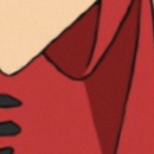
图1：两倍放大下，左边是YUV420，右边是YUV444。用 fvf.Debic 缩小像素，然后用 nnedi3_rpow2.nnedi3_rpow2和 resize.Bilinear 放大像素。
在这种情况下，最差的调整工具（bilinear）被用于色度平面。如果你使用类似 带有 KrigBilateral配置的mpv 时，这应该看起来好得多。 另一个例子：《寄生虫》 SDR UHD缩放为1080p 4:2:0与4:4:4的比较。
图2：《寄生虫》（Parasite (2019)） SDR UHD缩小为1080p情况下4:2:0与4:4:4的比较。感谢HyerrDoktyer提供。
下一个要解释的信息是P8。这指的是位深(Bit depth)，本例中是8-bit。现在大多数视频都存储在8-bit，因为8-bit的 AVC【译者注：H.264】 具有最好的硬件兼容性。 然而，由于8-bit导致位深没有足够的值(0-255)可用，它很容易引入例如色带(Banding)之类的错误。更高的位深在这方面没有这么大的问题，且由于其更好的准确性，10-bit实际上更能以较小的文件体积存储视频。然而，10-bit的 AVC 几乎没有硬件兼容性可言，而且需要更长的时间来编码，因此PT用户通常不喜欢它。实际上大多数内容是以10-bit或12-bit制作的。 由于精度的提高，最流行的滤镜处理位深是16-bit。值得注意的是，UHD蓝光将采用YUV420P10，即10-bit。
最后一部分，则要讲述的内容是限制范围(limited range)。在全范围(full range)8-bit中，我们可以用0至255之间的每一个值。可是，电视通常无法显示这些值，因而亮度被限制在16至235、色度被限制在16至240。大多数消费内容（如蓝光盘）也被限制在有限的范围内。假如你给电视一个全范围的视频，它将简单粗暴地将所有16及以下或235/240及以上的数值显示为相同效果(make ... the same value)（例如：黑色或白色）。
这可能是花费时间最多的地方：检查你的源代码是否有问题。这需要遍历的整个源文件并亲自是否有色带(banding)、锯齿(aliasing)、脏线(dirty line)以及其他可能存在的问题。好消息是，VSEdit 允许你通过CTRL + SHIFT + LEFT/RIGHT键，按自己定义的步进来检查你的源文件。这个步进可以在预览窗口的右下角定义。我建议步进设置在1至3秒间。显然，间隔越短越好，因为你会检查更多的帧。
为了在一个给定的区间应用一个滤镜，请使用如下方法：
xxxxxxxxxx21filtered = my_filter(src)2out = awf.rfs(src, filtered, mappings="[FIRST_FRAME LAST_FRAME]")尽管如果你将以与源文件相同的位深输出，就没有必要在高位深下工作，但为了输出时避免四舍五入的错误，建议在滤镜链的最后使用抖动降低位深，这可能会导致色带的伪影（图23是一个例子）。幸运的是，即使你不选择以高位深来编写脚本，大多数插件都可以在内部用高位深工作。由于抖动的速度相当快，而且更高的位深确实能带来更好的精度，所以除了一些为8-bit写的函数稍慢之外，通常没有理由不在更高的位深下工作。
如果你想了解更多关于抖动的信息，维基百科上的内容相当丰富，也有很多值得一读的研究出版物。在这里你只需要明白，只有当压制源和使用滤镜后的片段之间存在实际差异时，你使用的抖动方法才是重要的。由于抖动是对不同位深的四舍五入的一种选择，只有与实际整数的偏移才会有差异。一些算法可能在不同的情况上比其他的更好，因此，有理由使用非标准的算法。例如，如果你想将某个视频的色带去除，并以8-bit的形式输出，但在正确压缩方面存在问题时，你可能想考虑有序抖动，因为众所周知，它在这种情况下的表现略好（尽管它看起来不那么棒）。要做到这一点，请使用以下代码：
xxxxxxxxxx31source_16 = fvf.Depth(src, 16)2deband = core.f3kdb.Deband(source_16, output_depth=16)3out = fvf.Depth(deband, 8, dither='ordered')同样，这只会影响实际的去色带区域。这在大多数情况下并不推荐，因为有序抖动的效果相当难看，但如果你在压缩去色带区域时遇到困难，这依然值得考虑。显然你应该使用遮罩并调整去色带函数的参数，后面会有更多关于此的内容。
为了向上或向下抖动，你可以使用 fvsfunc14(fvf) 或 mvsfunc15(mvf) 中的 Depth 函数。这两者之间的区别是，fvf 仅使用内置调整工具，而 mvf 不仅可以内置调整工具，而且也支持 fmtconv，它比较慢，但有更多的抖动（和缩放）选项。然而，两者都具有标准的 Filter Lite error_diffusion 抖动类型，所以如果你只是使用默认值，我会推荐 fvf。为了说明优质抖动与劣质抖动之间的区别，在附录中的图21下提供一些例子。 请注意，你可能要放大到相当大的程度才能发现其区别。有些PDF阅读器可能会不正确地显示这些图像。
我建议在大多数情况下使用 Filter Lite（fvf 的默认值 或 mvf.Depth(dither=3) 即 mvf 默认值)。其他如Ostromoukhov (mvf.Depth(dither=7)), void and cluster (fmtc.bitdepth(dither=8)), standard Bayer ordered (fvf.Depth(dither='ordered') 或 mvf.Depth(dither=0)) 有时也会有用。不过，Filter Lite 通常更适用。
这是人们会遇到的最常见的问题。当位深不足和劣化设置导致较平滑的梯度变成突然的颜色变化时，就会发生色带现象，这最终显然看起来不好。好消息是因有更多的值可以用于创建梯度，所以更高的位深可以帮助解决这个问题。正因为如此，很多去色带工作都是在16-bit下完成的，然后在滤镜过程完成后再抖动到10-bit或8-bit。
关于去色带，需要注意的一点是，你应该尽量使用遮罩，最好是边缘遮罩或类似的东西。详见3.2.14)！
在 VapourSynth 中，有两个很优秀的函数可以用来修复色带：f3kdb16 和 fvsfunc.gradfun3。后者不太常用，但其中有内置遮罩。
让我们先看看 f3kdb。 VapourSynth 的相关代码默认设置如下：
xxxxxxxxxx11deband = core.f3kdb.deband(src = clip, range = 15, y = 64, cb = 64, cr = 64, grainy = 64, grainc = 64, dynamic_grain = False, output_depth = 8)这些设置对一些人来说可能是不言自明的，但还是说明一下各参数的作用：
src 这显然指你的输入内容。range 指定了用于计算某场景中色带的像素范围。更高的范围意味着更多的像素被用于计算，也意味着它有更高的性能需求。默认值15通常是足够的。y 最重要的设置，因为大多数（明显的）色带发生在亮度平面。它规定了在亮度平面上要有多大的差异才会被认为是色带的。你应该从低数值开始，缓慢但有效地提高，直到色带消失。如果设置得太高，很多细节就会被视为色带，从而变得模糊不清。cb/cr 与y相同，但应用于色度平面。然而，色度平面上的色带是很不常见的，所以你通常可以忽略它。grainy/grainc 为了防止带状物再次出现，并抵消平滑度，通常在去色带过程后加入颗粒(grain)。然而，由于这种假颗粒是相当明显的，建议保守一点添加。另外，你可以使用自定义加噪，这将得到一个更好的输出（见3.2.10)）dynamic_grain 默认情况下，f3kdb添加的噪点是静态的。这样压缩效果更好，因为动态显然更少，但它在实拍内容中看起来不正常，所以除非你正在处理动画内容，否则通常建议将其设置为 True。output_depth 你应该将其设置为你想在去色带处理后的任意位深。如果你一直在8-bit下进行处理，你可以忽略这个选项。一个相当简单去色带的例子：
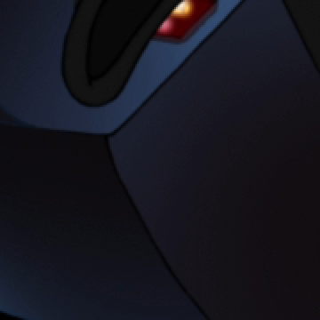
图3：两倍放大下，左边为源，右边为 deband = core.f3kdb.Deband(src, y=64, cr=0, cb=0, grainy=32, grainc=0, range=15, keep_tv_range=True) 处理后的效果。
如果你想把 f3kdb 和 gradfun3 两种遮罩一起使用，你可以使用 fag3kdb 替代。我建议在去色带力度非常强时尝试这个方法，但 retinex_edgemask 或 debandmask 在大多数情况下效果更好（尽管比前者的速度要慢很多）。
最常用的替代品是 gradfun3，它可能主要是由于其参数不太直接而不太受欢迎。它的工作原理是将源平滑处理，并通过 mvf.LimitFilter 将其限制在 thr 和 elast指定的值内，然后通过其内部遮罩与源合并（尽管使用外置遮罩也是可行的）。
许多人认为 gradfun3 比 f3kdb 的处理结果更平滑。因为它与 f3kdb 相比有更多的选项，而且使用它在大多数时候不必为遮罩而烦恼，所以值得了解如何去使用：
xxxxxxxxxx31import fvsfunc as fvf2deband = fvf.GradFun3(src, thr=0.35, radius=12, elast=3.0, mask=2, mode=3,3ampo=1, ampn=0, pat=32, dyn=False, staticnoise=False, smode=2, thr_det=2 + round(max(thr - 0.35, 0) / 0.3), debug=False, thrc=thr,radiusc=radius, elastc=elast,planes=list(range(src.format.num_planes)), ref=src, bits=src.format.bits_per_sample) # + 调整大小的变量很多这些值是用于 fmtconv位深转换的，因此它的文档可以证明其是有帮助的。GradFun3中的缩小像素与其他缩小方法没有什么不同，所以我不会讨论这个。其他一些可能感兴趣的参数是：
thr 等价于y/cb/cr。你可能想提高或降低它。radius 与 f3kdb的range 具有相同的效果。smode 设置平滑模式。通常最好保持默认值，即双边(bilateral)滤镜。如果你想使用支持CUDA的GPU而不是CPU的话，可以把它设置为5。使用 ref（默认为input clip）作为参考素材。mask 如果设置为0，则禁用遮罩。否则，它设置了要调用的 std.Maximum和std.Minimum 的次数。planes 设置需要处理的平面。mode 设置 fmtconv 中使用的抖动模式。ampn/staticnoise 设置 fmtconv应该添加多少噪点以及噪点是否为静态。对于真人动作内容来说，有必要进行调整。debug 允许你查看遮罩。elast是 "软阈值的弹性"。更高的值会在去色带遮罩和源之间做更多的混合。如果去色带处理后的片段与未经处理的相比噪点很少，此时你应该考虑使用一个单独的函数来添加匹配的噪点，这样场景就更容易融合在一起。 如果有很多噪点，你可能要考虑使用 adptvgrnMod、adaptive_grain 或 GrainFactory3；对于不太明显的噪点或对于通常只有很少噪点的明亮场景，你也可以使用 grain.Add。这个话题将在后面的3.2.10)中进一步阐述。
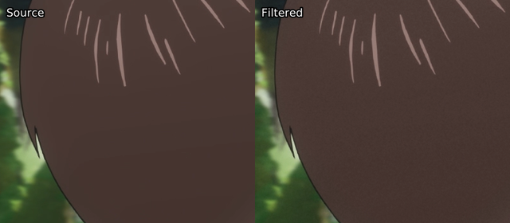
图4：左边是源，右边是滤镜处理后的。这里的色带可能很难发现，但我不能在这个PDF中加入更大的图片。不过，这个效果应该是显而易见的。
如果你想进行自动色带检测，你可以使用一个基于 bandmask 的检测函数，叫做 banddtct。确保适当调整数值并检查全部输出。3.2.17中有一个解释它的论坛帖子链接。你也可以在运行 adptvgrnMod 或adaptive_grain 时使用一个高的 luma_scaling 值，希望噪点能完全覆盖它。 更多关于这个的内容在3.2.10)中继续讨论。
另一个非常常见的问题，至少在真人电影的内容中，是脏线。这类问题通常出现在视频的边界上，与周围的行相比，某一行或某一列的像素通常表现出过低的亮度值。通常情况下，这是由于不适当地缩小分辨率，更明显的是在应用边框后的缩小分辨率。脏线也可能发生，因为视频编辑者往往不知道他们是在YUV422下工作的，这意味着他们的竖向像素值不必是偶数；而消费者内容将是YUV420，意味着竖向像素值必须是偶数，导致额外的黑行。
另一种形式的脏线是在黑条上出现色度平面时表现出来的。 通常情况下，这些应该被裁剪掉。然而，相反的情况也可能发生，即具有合法的亮度信息的平面但缺乏色度信息。 有六种常用的滤镜用于修复脏线。
cf的ContinuityFixer
ContinuityFixer 的工作原理是将指定的行/列与周围范围指定的行/列数量进行比较，通过最小二乘法再回归找到新值。其设置如下：
xxxxxxxxxx11fix = core.cf.ContinuityFixer(src=clip, left=[0, 0, 0], right=[0, 0,0], top=[0, 0, 0], bottom=[0, 0, 0], radius=1920)这是假设你使用的是1080p的素材，因为半径的值被设置为源的分辨率所定义的最长的集合。我建议使用一个更低的值，但不要低于3，因为在这一点上，你可能是在复制像素（参见下面的FillBorders）。可能会让大多数新手感到困惑的是，我输入了一个数组，作为要固定的行/列的值。这些值表示要应用到三个平面上的值。通常情况下，脏线只会发生在亮度平面上，所以你通常可以把其他两个平面的值保持为0。 请注意，数组并非必须，因此您也可以只输入希望应用修复的行/列的数量，所有平面都会被处理。
ContinuityFixer 最擅长的一点是去除不规则的东西，比如点。 它也比 bbmod 和 FixBrightnessProtect2 快，但它应该被视为这两者的备选方案。
awsmfunc的bbmod
这是原BalanceBorders 函数的一个修改版。它与 ContinuityFixer 非常相似，但在更高的模糊值(blur)和阈值(thresh)的情况下会产生更好的效果。如果它没有产生去分的结果，可以改变这些，但是你设置的模糊值越低，这个函数的破坏性就越大。它也比 havsfunc 和 sgvsfunc 中的版本快得多，因为只有必要的像素被处理。
xxxxxxxxxx21import awsmfunc as awf2bb = awf.bbmod(src=clip, left=0, right=0, top=0, bottom=0,thresh=[128, 128, 128], blur=[20, 20, 20], scale_thresh=False,cpass2=False)thresh 和 blur 的数组也是Y、U和V的值。建议先试试 blur=999，然后尝试降低这个和 thresh 的值，反复尝试，直到你得到合适的效果。
thresh指定了结果可以和输入值相差多少。blur 是过滤器的强度，数值越低越强，数值越大则越弱。如果你设置 blur=1 ，你基本上就等同于复制行。
fb的FillBorders
这个函数几乎就是复制下一列/行的内容。虽然这听起来很傻，但当分辨率缩小导致更多的行在底部而不是顶部，并且由于YUV420的偶数的竖向像素值，我们不得不填充一行时，它就会非常有用。
xxxxxxxxxx11fill = core.fb.FillBorders(src=clip, left=0, right=0, bottom=0, top=0, mode="fillmargins")这个函数的一个非常有趣的应用是类似于只对色度平面应用 ContinuityFixer，它可以用在灰色边界或无论应用什么亮度平面修复的修复方法都与边界不匹配他们的环境时。这可以用下面的脚本来完成：
xxxxxxxxxx21fill = core.fb.FillBorders(src=clip, left=0, right=0, bottom=0, top=0, mode="fillmargins")2merge = core.std.Merge(clipa=clip, clipb=fill, weight=[0,1])你也可以分离平面并单独处理色度平面，尽管这只是稍微快一点。允许您为fb【译者注：core.fb】指定每个平面值的封装函数是 awsmfunc 中的 FillBorders。
edgefixer的ReferenceFixer
这需要原始版本的edgefixer（cf只是它的一个旧的移植版本，但它使用起来更漂亮，处理过程也没有改变）。我从来没有发现它有什么用处，但从理论上讲，它是很好的。它与一个参考素材进行比较，以调整其边缘固定。
xxxxxxxxxx11fix = core.edgefixer.Reference(src, ref, left=[0, 0, 0], right=[0, 0,0], top=[0, 0, 0], bottom=[0, 0, 0], radius = 1920)rekt的 rektlvls
这基本上是 FixBrightnessProtect 和 FixBrightness 的合二为一，另外还有一个事实，即不是整个画面都被处理。它的参数非常简单明了，提高调整值可以变亮，降低调整值可以变暗。将 prot_val 设置为0时，它的功能就与 FixBrightness相同，意味着调整值需要改变。
xxxxxxxxxx21from rekt import rektlvls2fix = rektlvls(src, rownum=None, rowval=None, colnum=None, colval=None, prot_val=20)如果你想一次处理多行，你可以输入一个列表（例如，rownum=[0, 1, 2]）。
有一点不应该被忽视的是，对太多的行/列应用这些修正（除了 rektlvls 之外）可能会导致最终结果看起来很模糊。正因为如此，我们建议尽可能使用 rektlvls，或只在必要的行上使用亮度修复。如果失败了，最好在使用 ContinuityFixer 之前先试试 bbmod。
值得注意的是，你总是应该在调整大小之前修复脏线，否则做会引入更多的脏线。然而，更需注意的是，如果你在边缘使用 FillBorders 填充了一条黑线，你应该使用调整大小的工具来删除它。例如，要将一个顶部有一条填充线的片段从1920 × 1080调整为1280 × 536时应该这么做：
xxxxxxxxxx81top_crop = 1382bot_crop = 1383top_fill = 14bot_fill = 05src_height = src.height - (top_crop + bot_crop) - (top_fill + bot_fill)6crop = core.std.Crop(src, top=top_crop, bottom=bot_crop)7fix = core.fb.FillBorders(crop, top=top_fill, bottom=bot_fill, mode="fillmargins")8resize = core.resize.Spline36(1280, 536, src_top=top_fill, src_height=src_height)如果你要处理对角线的边框，正确的做法是使用蒙版覆盖源，用FillBorders 调用合并源。为此举一个例子（来自D-Z0N3压制的作品《你的名字》）：
图5：该示例为《你的名字》（Your Name (2016)）中不恰当地使用边框。D-Z0N3的使用了蒙版，而Geek没有。 因此，Geek缺乏任何类似的纹理，而D-Z0N3则尽可能地保留它。使用 FillBorders 中的镜像模式可能更明智，但事后看来是20/20【译者注： “20/20视力”称为“完美”视力】。
D-Z0N3使用的代码（16-bit下）：
xxxxxxxxxx21mask = core.std.ShufflePlanes(src, 0, vs.GRAY).std.Binarize(43500)2cf = core.fb.FillBorders(src, top=6).std.MaskedMerge(src, mask)在附录中的图22下有一个例子，说明为什么要使用蒙版。
为了说明脏线可能是什么样子，这里有一个 ContinuityFixer 和纯色的 FillBorders 对比的例子。
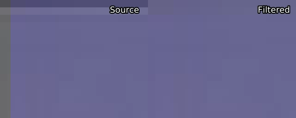
图6：来源于的D-Z0N3的压制作品《声之形》（A Slinet Voice (2016)）的脏线修复与过滤。在最上面的三行使用 ContinuityFixer，在最左边的两列使用FillBorders。 当前画面放大15倍。
脏线很难发现。如果你在随机检查不同帧的边界时候不能发现存在脏线，那么可能就没有问题。如果你发现有每边都有小黑线边界，那么可以使用类似下面的脚本：
xxxxxxxxxx111def black_detect(clip, thresh=None):2 if thresh == None:3 thresh = (25 * (1 << clip.format.bits_per_sample) - 1) / 2554 mask = core.std.ShufflePlanes(clip, 0, vs.GRAY).std.Binarize({0}".format(thresh)).std.Invert().std.Maximum().std.Inflate().std.Maximum().std.Inflate()5 l = core.std.Crop(mask, right=clip.width / 2)6 r = core.std.Crop(mask, left=clip.width / 2)7 mask_test = core.std.StackHorizontal([r, l])8 t = core.std.Crop(mask_test, top=clip.height / 2)9 b = core.std.Crop(mask_test, bottom=clip.height / 2)10 mask_test = core.std.StackVertical([t, b])11return mask_test这个脚本将 threshold 以下的数值（即黑色边框）在大部分黑色背景的中部显示为垂直或水平白线。你可以运用这个函数来浏览并检查你的视频。你也可以尝试使用 blckdtct27，它可以为你扫描视频。
其他类型的可变脏线是一个修复难题(a bitch to fix)，需要手动检查场景。
一个与脏线非常相似的问题是糟糕的边界(bad borders)。在不同场景中（例如IMAX或4:3），黑色边框有时可能不完全是黑色的，或者完全被打乱了。为了解决这个问题，只需将其裁剪并重新添加。你也可能想修复过程中可能出现的脏线：
xxxxxxxxxx31crop = core.std.Crop(src, left=100, right=100)2clean = core.cf.ContinuityFixer(crop, left=2, right=2, top=0, bottom=0, radius=25)3out = core.std.AddBorders(clean, left=100, right=100)这可能是最常见的问题。如果你想解决这个问题，首先要确定这个问题是由锯齿而不是糟糕的放大像素(upscaling)造成的。如果你已经确认，我推荐的工具是 TAAmbk 套件：
xxxxxxxxxx21import vsTAAmbk as taa2aa = taa.TAAmbk(clip, aatype=1, aatypeu=None, aatypev=None, preaa=0, strength=0.0, cycle=0, mtype=None, mclip=None, mthr=None, mthr2=None, mlthresh=None, mpand=(1, 0), txtmask=0, txtfade=0, thin=0, dark=0.0, sharp=0, aarepair=0, postaa=None, src=None, stabilize=0, down8=True, showmask=0, opencl=False, opencl_device=0, **args)尽管GitHub的README内容相当详细，但在这有必要进行一些额外的补充：
aatype: (默认值: 1)
这里的值可以是表示亮度平面AA类型的数字，也可以是表示其AA类型的字符串。
xxxxxxxxxx2010: lambda clip, *args, **kwargs: type('', (), {'out': lambda: clip}),21: AAEedi2,32: AAEedi3,43: AANnedi3,54: AANnedi3UpscaleSangNom,65: AASpline64NRSangNom,76: AASpline64SangNom,8-1: AAEedi2SangNom,9-2: AAEedi3SangNom,10-3: AANnedi3SangNom,11'Eedi2': AAEedi2,12'Eedi3': AAEedi3,13'Nnedi3': AANnedi3,14'Nnedi3UpscaleSangNom': AANnedi3UpscaleSangNom,15'Spline64NrSangNom': AASpline64NRSangNom,16'Spline64SangNom': AASpline64SangNom,17'Eedi2SangNom': AAEedi2SangNom,18'Eedi3SangNom': AAEedi3SangNom,19'Nnedi3SangNom': AANnedi3SangNom,20'PointSangNom': AAPointSangNom,我建议使用的是 Eedi3、Nnedi3、Spline64SangNom 和 Nnedi3SangNom。 这两种 SangNom 模式都具有难以置信的破坏性，只有在绝对必要的情况下才应使用。Nnedi3 通常是你最好的选择；它不是很强也不具有破坏性，但往往足够好，而且速度相当快。Eedi3 慢得令人难以置信，但比 Nnedi3 强，且不像 SangNom 模式那样具有破坏性。
aatypeu: (默认值 aatype 一致)
当片段的格式为YUV时，为U平面选择主AA内核。
aatypeu: (默认值 aatype 一致)
当片段的格式为YUV时，为V平面选择主AA内核。
strength: (默认值: 0)
预降(predown)的强度。有效范围是[0, 0. 5] 在应用主AA核之前，哦i按段分辨率会先被缩小到 (1- strength)×clip_resolution，然后被主AA核放大至原始分辨率。这可能对那些因放大像素不足而造成严重锯齿的素材有好处。当使用不适合放大像素的AA内核时，自动禁用。如果可能，即不要增加，也不要降低。
preaa: (默认值: 0)
选择 preaa 模式
在应用主AA内核之前，先使用 preaa。preaa 基本上是 daa 的一个简化版本。在处理由劣质反交错(deinterlacing)引起的残余隔行(residual comb)时相当有用。否则，不要使用它。
cycle: (默认值: 0)
设置主AA内核的循环次数。用于非常非常糟糕的锯齿和3D锯齿。
mtype: (默认值: 1)
选择要使用的边缘遮罩的类型。目前三种遮罩类型分别是：
遮罩总是在8-bit下构建。这所有选项都棒，但你最好测试一下，看看哪种最终效果最好。
mclip: (默认值: None)
使用自定义遮罩，而不是由函数内部建立，并且你应该自己处理遮罩的分辨率、位深、格式等问题。如果设置了mclip，脚本将不会构建其他遮罩了。
mthr:
遮罩的大小。你给定的值越小，你将得到越大的遮罩。
mlthresh: (默认值: None)
为 n-pass 的遮罩设置亮度 thresh。使用一个列表或数组来指定luma的部分。
mpand: (默认值: (1,0) )
使用一个列表或元组来指定掩码扩展和掩码放大的循环。
txtmask: (默认值: 0)
创建一个掩码来保护屏幕上的白色字幕。值是亮度的阈值。有效范围是0-255。当一个区域的亮度值大于阈值，色度值为128±2时，它将被认为是一个字幕。
txtfade: (默认值: 0)
设置淡入淡出的长度(时长？)。用于的淡入淡入淡出字幕。
thin: (默认值: 0)
在应用主AA内核之前，通过aWarpSharp2对该行进行扭曲。
dark: (默认值: 0.0)
在应用主AA内核之前，通过 Toon 使线条变暗。
sharp: (默认值: 0)
在应用主AA内核后，对片段进行锐化。
sharpen()无论哪种类型的锐化，较大的锐化绝对值意味着较大的锐化强度。
aarepair: (默认值: 0)
使用修复来消除由主AA内核引入的伪影。根据不同的修复模式，原始素材中的像素将被处理过的素材的3x3邻居中的中位数或平均值所取代。强烈建议在主AA内核包含 SangNom 时使用该修复。更多信息请查看。 但很难让这个工具正常工作。
postaa: (默认值: False)
是否使用 soothe 来对抗锐化带来的混杂现象。
src: (默认值: clip)
引入片段进行锐化、修复、蒙版合并等。
stabilize: (默认值: 0)
通过 MVTools 稳定时间上的变化。值是时间半径。有效范围是[0, 3]。
down8: (默认值: True)
如果你将此设置为 True，引入的片段将先被降低到8-bit，并在应用主AA内核之后回升到原始的位深度。在位深转换中，采用 LimitFilter 来减少损失。
showmask: (默认值: 0)
如果你把它设置为非0数值，则输出遮罩而不是处理过的片段。
opencl: (默认值: False)
是否使用opencl版本的一些插件。目前有三个插件可以使用opencl：
这可能会加快速度，这显然是很好的，因为抗锯齿计算通常是很慢。
opencl_device: (默认值: 0)
选择一个 OpenCL 设备。要知道选择的是哪一个的，请输入：
xxxxxxxxxx11core.nnedi3cl.NNEDI3CL(clip, 1, list_device=True).set_output()其他参数：
将被收集到一个特别为 aatype 制作的手册中。
请注意，还有很多非常好的抗锯齿方法，以及许多不同类型的遮罩，你可以使用（例如，其他边缘遮罩，无限接近两种遮罩的结合(clamping one method’s changes to those of another method)等等）。然而，大多数方法都是基于与 TAA 实现的非常相似的方法。
如果你的整个视频都受到锯齿的影响，那么放大像素的效果就很糟糕，这也不是太不可能的。在这种情况下，在决定你是否需要执行抗锯齿操作之前，先缩小像素或调整大小。
这有一个抗锯齿修复例子（来自《悠哉日常大王》(劇場版 のんのんびより ばけーしょん（2018）)）：
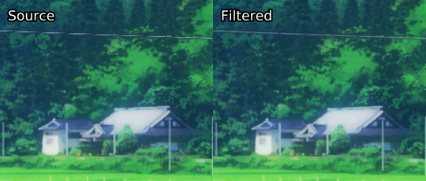
图7：左边为带有锯齿的源，右边为滤镜处理后
在这个例子中，我们进行了以下操作：
xxxxxxxxxx31mask = kgf.retinex_edgemask(src).std.Binarize(65500).std.Maximum().std.Inflate()2aa = taa.TAAmbk(src, aatype=2, mtype=0, opencl=True)3out = core.std.MaskedMerge(src, aa, mask)虽然大多数电影是以2K分辨率制作的，大多数动漫是以720p制作的，但蓝光片几乎都是1080p，UHD蓝光片都是4K。这意味着母版制作公司经常要对画面进行放大。这种操作的结果通常不理想，但幸运的是，有些损伤是可逆的。由于动漫通常以比源图像更高的分辨率发布，而且使用 bilinear 或 bicubic 放大像素非常常见，大多数缩小分辨率软件是为动漫编写的，这也是你需要缩小分辨率的主要场景。真人电影通常不能被缩小分辨率，因为糟糕的专有缩放器（通常是 QTEC 或类似的），因此大多数真人电影压制人员不知道是否需要缩小分辨率或根本不考虑。
所以，如果你对动漫进行编码，一定要确保查看过原画分辨率(check what the source images are)。你可以使用https://anibin.blogspot.com/ 来查阅原画发行信息 ，通过 getnative 进行截图，或者干脆自己试试。最后一个选项显然是最好的方法，但 getnative 通常也非常好，而且更容易。Anibin，虽然也很有用，但并不总是能得到正确的分辨率。
为了达到缩小分辨率的效果，你应该使用 fvsfunc：
xxxxxxxxxx21import fvsfunc as fvf2descaled = fvf.Debilinear(src, 1280, 720, yuv444=False)在上面的例子中，我们将使用 bilinear 缩小到720p，并用 Spline36 将色度平面缩小到360p。如果你为一个不关心硬件兼容性的网站/团体压制动漫作品，你可能会想将yuv444=true，并相应地改变你的编码设置。
缩小像素支持使用 bilinear、bicubic 和 spline 放大内核。除了 Debilinear之外，每一种都有自己的参数。对于 Debicubic，这些参数是：
最常见的情况是 b=1/3和c=1/3 ，这是默认值；b=0和c=1，这是过度锐化的 bicubic；b=1和c=0，这是模糊化的 bicubic。不过，介于两者之间的数值也很常见。
同样，Delanczos 也有 taps 选项，使用Spline 放大分辨率的同样可以用 Despline36 和 Despline16 来反转放大分辨率操作。
缩小分辨率后，你很可能想再放大至1080p或2160p。这样做的首选方法是通过 nnedi3，或者更具体地说是使用edi3_rpow2 或 nnedi3_rpow2。
xxxxxxxxxx41from edi3_rpow2 import nnedi3_rpow22descaled = fvf.Debilinear(src, 1280, 720)3upscaled = nnedi3_rpow2(descaled, 2).resize.Spline36(1920, 1080)4out = core.std.Merge(upscaled, src, [0, 1])我们在这里做的是 bilinear 放大后再降至720p，然后用 nnedi3 将其升至1440p，再降至1080p，然后与源的色度平面合并。这样做的原因有很多：
另一件要注意的事是，字幕和其他文字往往是在放大像素后添加的，因此你需要使用一个蒙版，以免破坏这些文字。幸运的是，你可以简单地在缩小像素的函数名称后添加一个M（DebilinearM），你就会得到一个遮罩。然而，这将大大减慢了缩小分辨率速度，所以你可能想在这里进行场景过滤。
在上述常见的分辨率缩小方法之外，还有一些值得考虑的滤镜，尽管它们的作用实际上都是一样的，那就是对线条艺术(line art)（又称边缘）进行分辨率缩小，并将其重新调整为源分辨率。如果在放大分辨率后添加了大量的抖动，这就特别有用。
DescaleAA：fvsfunc 的一部分，使用一个 Prewitt 遮罩来找到线条艺术并重新将像素放大。InsaneAA：使用强化的 Sobel 遮罩以及混合使用 eedi3 与 nnedi3。就个人而言，我不喜欢把它放大回去并坚持使用YUV444编码。然而，如果你想这样做，你也可以考虑尝试编写你自己的遮罩。一个例子是（根据以前的代码）。
xxxxxxxxxx31mask = kgf.retinex_edgemask(src).std.Binarize(15000).std.Inflate()2new_y = core.std.MaskedMerge(src, upscaled, mask)3new_clip = core.std.ShufflePlanes([new_y, u, v], [0, 0, 0], vs.YUV)为了说明区别，这里有一些放大至源分辨率的例子。请注意，通过视频播放器将YUV444分辨率缩小后的画面放大会更好看。
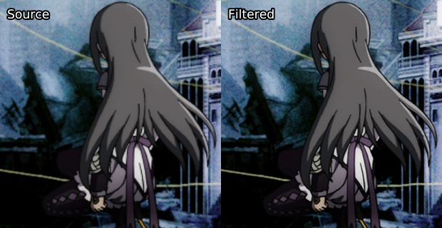
图8：蓝光源，左边是通过 bicubic 放大函数将720p的画面提升到1080p，右边是用Debilinear 和 nnedi3 重新缩放。
重要的是要注意，这当然也可以用于实景拍摄的画面。一个例子是《权力的游戏》第一季的UHD蓝光片，它是双线性(bilinear)升频的。虽然在截图中并不明显，但在播放过程中的差异是惊人的。
图9：《权力的游戏》（Games of Throne:Seaon 1 (2011)）UHD蓝光源，上边是通过 bilinear 像素放大函数将1080p的画面提升到2160p，下边是用 Debilinear 和 nnedi3 重新缩放。
如果你的视频在每一帧中都有多个源分辨率（即不同的层有不同的分辨率），你可以通过 getnative 输出多个结果来注意到这一点，你最好的办法是通过 Spline36 缩小到最低分辨率。虽然从技术上讲，你可以屏蔽每个图层，将它们全部缩小到它们的源分辨率，然后再将每个图层放大回去，但这太费劲了，不值得这么做。
术语 "振铃" 可以指大多数边缘伪影，其中最常见的是蚊式噪声(mosquito noise) 和 边缘增强伪影(edge enhancement artifacts)。振铃是低质量视频源中十分常见。然而，由于拍摄设备原因和糟糕的压缩方法，即使是高比特率的音乐会也很容易出现这种情况。为了解决这个问题，建议使用 HQDeringmod 或 EdgeCleaner（来自 scoll）等软件，我建议使用前者。这些方法主要目的是模糊和锐化边缘，然后通过边缘遮罩进行合并。它们简单易用，所以你可以自己阅读和了解它们，并熟悉它们的用途。由于 rgvs.Repair 可能相当激进，如果你使用这些函数，并且默认值不能产生足够好的结果，我建议你尝试修复数值。
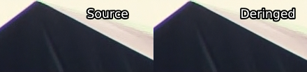
图10：左边是源，右边是经 HQDeringmod(mrad=5, msmooth=10, drrep=0) 处理后的。 这是非常暴力的去振铃方式，我一般不推荐。该示例图像是来自One Ok Rock演唱会，码率37 mbps蓝光视频。
光晕如其名：边缘周围的粗而亮的线条。这一问题常出现在没有正确地调整大小后。你可能也会发现，像素缩小(descaling)参数不足或对低质量视频缩小分辨率会产生明显的光晕。为了解决这个问题，你应该使用havsfunc的DeHalo_alpha 或其已蒙版处理的同类产品 FineDehalo。如果使用前者，你必须编写你自己的掩码，因为无掩码的去晕通常会导致糟糕的结果。关于如何写一个简单的去光晕遮罩，请看encode.moe的指南。
由于 FineDehalo 是 DeHalo_alpha 的衍生函数，因此它们共享一些参数。
xxxxxxxxxx31FineDehalo(src, rx=2.0, ry=None, thmi=80, thma=128, thlimi=50, thlima=100,2darkstr=1.0, brightstr=1.0, showmask=0, contra=0.0, excl=True,edgeproc=0.0) # ry defaults to rx3DeHalo_alpha(clp, rx=2.0, ry=2.0, darkstr=1.0, brightstr=1.0, lowsens=50,highsens=50, ss=1.5)AviSynth维基上的解释足以帮助了解：http://avisynth.nl/index.php/DeHalo_alpha#Syntax_and_Parameters 和 http://avisynth.nl/index.php/FineDehalo#Syntax_and_Parameters 。
降噪是一个相当棘手的问题。真人电影压制从不降噪(Live action encoders will never denoise)，而动漫压制往往会降噪过度。你想对动漫进行降噪的主要原因是，它本身不应该有任何噪点，但压制时会引入噪点，而位深转换会引入抖动。前者是不需要的，而后者是需要的。你也可能会遇到像闪回(flashbacks) 过程中遇到明显的颗粒感(grains)。去除不需要的噪点将有助于压缩码率，并消除一些轻微的抖动/颗粒感；这对10-bit来说是很有用的，因为更平滑的视频源可以更好地进行编码并得到很好的效果，而8-bit的效果更为突出，更多的噪点可以防止出现色带等。可是，有时你可能会遇到这样的情况，你必须对压缩以外的内容进行去噪/去纹。例如，假设你正在对一部动漫电影进行编码，其中有一个原版动漫剧集的闪回场景。动漫电影通常是1080p制作的，但大多数系列不是。因此，你可能会遇到一个带有大量颗粒的1080p升级版。在这种情况下，你会想把颗粒去掉，重新缩放，并把它合并回来。
xxxxxxxxxx51degrained = core.knlm.KNLMeansCL(src, a=1, h=1.5, d=3, s=0, channels="Y", device_type="gpu", device_id=0)2descaled = fvf.Debilinear(degrained, 1280, 720)3upscaled = nnedi3_rpow2(descaled, rfactor=2).resize.Spline36(1920, 1080).std.Merge(src, [0,1])4diff = core.std.MakeDiff(src, degrained, planes=[0])5merged = core.std.MergeDiff(upscaled, diff, planes=[0])由于颗粒(grain)【译者注：可以理解为有益的噪点】和抖动(dither)是最难压缩的东西之一，许多视频源都只包含很少的颗粒，或者已去除明显的颗粒。为了应对这种情况，或者仅压缩没有颗粒的区域，手动添加颗粒往往是有利举措的。在这种没有明显颗粒的情况下，你通常要先移除噪点，然后再重新打上颗粒。这对动画片尤其有利，因为缺乏颗粒通常会使重编码更难保持颜色渐变。 由于是人为地添加颗粒，我们可以选择静态颗粒。在动漫中不易被察觉，而且压缩效果更好，因此它通常是动漫内容的最佳选择。然而，这在真人电影内容中往往是相当明显的，因此静态颗粒不常被用于发布在PT的压制作品中。
标准的加噪函数，grain.Add，也是其他函数在用的：
xxxxxxxxxx11grained = core.grain.Add(clip, var=1, constant=False)这里的 var 标志着强度。一般不会调得太高。如果你发现自己把它调得太高，它就会变得很明显，以至于你要尝试颗粒与画面相匹配，以保证颗粒不影响画面。
最著名的添加颗粒的函数是 GrainFactory3。这个函数允许你指定 grain.Add 应该如何应用于三个不同的亮度(luma)级别（亮、中、暗）。同时该函数也用 resize.Bicubic 对亮度平面进行缩放，以提高或降低其大小，以及通过函数中 b和 c 参数对其进行锐化，这些参数通过锐化选项来修改。由于你必须修改大小、锐度和阈值参数，所以在这里可能很难匹配。 然而，它可以产生很棒的效果，特别是对于具有更多自然颗粒的实景内容。
自动化程度更高的选择是 adaptive_grain。它的工作原理与 GrainFactory3 相似，但根据整体画面的亮度值和特定区域的亮度，对部分画面应用不同数量的颗粒。由于它没有很多设置项，所以更容易使用，而且对动漫来说效果很好。由于其考虑整个帧画面的平均亮度，因此能产生非常好的效果。
除了这两个函数之外，还有一个叫做 adptvgrnMod32 的组合，它将 GrainFactory3 的锐度和尺寸规格选项添加到 adaptive_grain 中。由于颗粒只被添加到一个（通常比帧小）图像的一个尺寸中，这往往是最快的函数。如果颗粒的大小不会因为不同的卢马等级而改变，就像数字生产的颗粒一样，这可能会导致比前述两个函数更好的结果。
对于那些好奇这可能是什么样子的人来说，请参考图4中《未来的未来》（Mirai (2018)）的去色带例子，因为在那个例子中，adptvgrnMod 被用来做纹路。
解锁主要相当于平滑源，通常在上面再加一个掩码。这里最流行的函数是来自 havsfunc的Deblock_QED。其主要参数是
其他流行的选项有 deblock.Deblock，它相当强大，但几乎总是有效；dfttest.DFTT，效果较弱，但仍然相当积极；以及 fvf.AutoDeblock，它对解锁MPEG-2源相当有用，可以应用于整个视频。另一种流行的方法是简单的去色带，因为去色块和去色带是非常类比似的。这对AVC蓝光资源来说是一个不错的选择。
如果你有一个较好并但偏色的片源和一个较差且无色彩渲染的片源，而你想去掉偏色层(you’d like to
remove tint)，你可以通过 timecube 和 Dr.Dre 的颜色匹配工具来实现。首先，在该工具中添加两张参考截图，导出LUT，保存它，并通过以下方式添加它：
xxxxxxxxxx31clip = core.resize.Point(src, matrix_in_s="709", format=vs.RGBS)2detint = core.timecube.Cube(clip, "LUT.cube")3out = core.resize.Point(detint, matrix=1, format=vs.YUV420P16)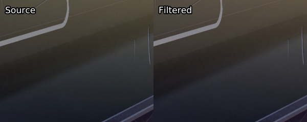
图11：左为偏色的源，右为色彩纠正后的。这个例子来自于D-Z0N3压制的《你的名字》（Your name (2016)）。此帧中还进行了抗锯齿处理。
同样，如果你有所谓的伽马(gamma)错误，或者更准确地说，双范围(double range)压缩（将有限范围的压缩完全应用于已经过范围受限处理的片段），只需做以下工作（适用于16-bit）：
xxxxxxxxxx11out = core.std.Levels(src, gamma=0.88, min_in=4096, max_in=60160, min_out=4096, max_out=60160, planes=0)图12：左由双范围(double range)处理，右由伽马(gamma)修复处理
通常会要求的使用值为0.88，但其他伽玛值也不是不可以。如果黑色的亮度值是218而不是235，这就是必要的。不要在低位深下进行这种操作，原因如图23所示。如果色度平面也受到影响，则必须单独处理它们：
xxxxxxxxxx11out = core.std.Levels(src, gamma=0.88, min_in=4096, max_in=61440,min_out=4096, max_out=61440, planes=[1, 2])你也可以使用 awsmfunc中封装的fixlvls 函数来完成所有这些操作。
如果你有一个色彩矩阵不正确的源，你可以用以下方法来解决这个问题
xxxxxxxxxx11out = core.resize.Point(src, matrix_in_s='470bg', matrix_s='709')'470bg'就是通常所说的601。调整大小的原因是，矩阵转换发生在 YUV 到 RGB 转换之间，这意味着我们需要提高色度。 我们使用点调整大小，因为它是绝对的。要知道你是否应该这样做，你需要一些参考来源，最好不是网络来源。从技术上讲，你可以识别不好的颜色，并意识到有必要改变矩阵。
图13：使用了TayTO压制的《燃烧》（Burning (2018)）进行矩阵转换的例子。最值得关注的地方是她的粉红色胸罩和背景中的红色。
虽然这个问题在动画片中特别常见，但它也发生在一些实拍片源中，而且许多音乐视频或音乐会在电视台播放时都有标识，因此值得研究如何删除硬拷贝或标识。对于logo，Delogo 插件非常值得考虑。要使用它，你将需要 Logo 的 .lgd 文件。你可以通过你最喜欢的搜索引擎简单地查找这个，应该会找到一些东西。从那里，用这个插件做什么应该是相当直接的。
最常见的去除硬字幕的方法是比较两个来源，一个有硬字幕，一个没有硬拷贝的参考来源。我推荐的函数是 kagefunc33的hardsubmask 和 hardsubmask_fades。前者只对有黑白字幕的资源有用，而后者可用于标识和移动字幕。两者的重要参数是扩展选项，这意味着对 std.max 的调用。根据你的视频源质量和检测到的数量，可能需要降低这些参数值。
我们也可以用 Delogo 进行类似的操作，以创建一个类似的遮罩：
xxxxxxxxxx11No example script yet
一旦你准备好你的蒙版，你就可以把你的参考无硬字幕源和主源合并起来。此过程中可能需要使用一些着色处理，因为二者可能有色差。值得注意的是，这样做要远好于将好的视频源（有硬字幕）替换成差的视频源。如果你很懒，通常可以毫无问题地将这些蒙版应用到整个片段中，无需遍历整个视频来寻找硬字幕区域。
【译者注：也可以叫做蒙版】这是最复杂的部分，也是动漫编码人员之外的大多数编码人员倾向于忽视的部分。遮罩有助于保护重要的细节不被你的滤镜所破坏。PT压制组使用的最常用的蒙版是二值化蒙版(binarize masks)。
xxxxxxxxxx31y = core.std.ShufflePlanes(src, 0, vs.GRAY)2mask = core.std.Binarize(y, 5000)3merge = core.std.MaskedMerge(filtered, src, mask)在这种情况下，我假设我们是在16-bit下操作。std.Binarize 在这里所做的是在位深允许范围内将小于5000以下的每个值变为最小值，5000以上的每个值变为最大值。这意味着5000以上的每个像素都将从源素材中复制出来。这通常被称为亮度遮罩(luma mask)，通常用于解决画面暗部色带问题。
我们也可以用其中一个色度平面来做相同的事：
xxxxxxxxxx51u = core.std.ShufflePlanes(src, 1, vs.GRAY)2mask = core.std.Binarize(u, 5000)3mask = core.resize.Bilinear(mask, 1920, 1080)4mask = core.std.Inflate(mask)5merge = core.std.MaskedMerge(filtered, src, mask)你可能已经注意到了，我进行了同样的二值化处理，但同时调整了蒙版的大小并使其膨胀。调整大小的原因显然是因为色度平面在YUV420中的分辨率较低，但有些人可能对调整工具的选择产生疑惑；使用双线性(bilinear)调整器会导致模糊，这意味着周围的像素也会受到影响，这通常对抗锯齿很有效。出于同样的原因，我增加了一个额外的 std.Inflate，尽管它通常对亮度平面比色度平面更有效。
更有趣和有用的蒙版是边缘蒙版和去烙印的特定蒙版。对于边缘蒙版，VapourSynth 用户有一个很大的优势，因为 kgf.retinex_edgemask 令人难以置信的准确，有着不可思议的结果。这个边缘遮罩获取源图像，使用 retinex 算法来提高黑暗区域的对比度和亮度，然后在 Kirsch 遮罩的基础上叠加一个 TCanny 遮罩。它的两个常见的用途是去色带和抗锯齿。
xxxxxxxxxx51retinex = kgf.retinex_edgemask(src)2antialiasingmask = retinex.std.Binarize(65000).std.Inflate()3antialiasingmerge = core.std.MaskedMerge(src, antialiasing,antialiasingmask)4debandmask = retinex.std.Binarize(7000).std.Maximum().std.Inflate()5merge = core.std.MaskedMerge(deband, src, debandmask)对于去色带，你通常希望从源文件中获取尽可能多的内容，以避免破坏细节，因此我们在低值处进行二值化，并用std.Maximum 和 std.Inflate 来增强蒙版。我们想用这个遮罩将源文件中的内容添加到去色带处理的片段中。我们可以用很多不同的方法来处理蒙版，比如把超过阈值的东西都乘以某个值 (std.Expr(retinex, "x 7000 > x 10 * x ?")，只让它最大化和膨胀，让它保持原样，或者你可以做任何想做的操作。
以一种非常不同但又相似的方式，抗锯齿通常只想应用于明显的边缘，因此我们在一个高值上进行二值化。std.Inflate 的调用就十分重要，它可以让我们获得应用抗锯齿的全部特效。在这里，我们想通过我们的遮罩将抗锯齿添加到源文件中。
其他有用的边缘遮罩(edge mask)包括：
std.Prewittstd.Sobel 通常比Prewitt更准确，但如果不选择 Kirsch 或 Retinex 遮罩，建议同时测试这两种遮罩。tcanny.TCanny 这基本上是在一个模糊的片段上抛出了一个 Sobel 遮罩。kgf.kirsch 在明亮的场景中会产生与 retinex_edgemask 几乎相同的结果，因为其被包含其中。处理速度比其他的慢，但因它使用了更多的方法(directions)，会给你带来很好的结果。所有这些的比较可以在附录中的图24和25下找到。
虽然边缘遮罩对去色带很有帮助，但它们往往也会检测到色带本身的边缘，而且通常相当慢。很好的替代品包括 GradFun3 和 debandmask。 后者非常快，能得到更好的结果，但它经由膨胀处理。对于 GradFun3，你可以使用Frechdachs制作的 Fag3kdb。我建议尽可能使用 debandmask，但在较暗的场景中，边缘遮罩通常被证明能产生更好的结果，所以要做一些测试进行选择。要从 GradFun3 中得到一个蒙版输出，你可以这么做：
xxxxxxxxxx11mask = fvf.GradFun3(src, debug=1)
图14：GradFun3（左上）、debandmask（右上）、retinex_edgemask（左下）和 retinex_edgemask.std.Maximum().std.Inflate()（右下）的比较
针对那些对使用和不使用遮罩的强力去色带之间的区别感到好奇的人，我们准备了附录中的图26作为参考，对比一个简单的边缘遮罩对去色带的影响。当使用亮度/色度遮罩时，请不要忘记测试你是否应该在之前的遮罩上使用适当的边缘遮罩或去色带专用遮罩，因为简单的亮度遮罩会使边缘被破坏。附录中的图27和28有这方面的例子。
现在我们已经介绍了常见的蒙版，让我们继续介绍那些能帮助你操作的蒙版或创建你自己的蒙版。在这我只简单介绍，因为他们的文档写的非常详细。
std.Maximum/Minimum：用这个来放大或缩小你的蒙版，你可能还想应用 coordinates=[0, 1, 2, 3, 4, 5, 6, 7]，使用任何适宜的数值来指定周围像素的权重。std.Inflate/Deflate：与前面的函数类似，但它不是应用像素的最大值，而是将它们合并，这将使你得到一个轻微的边缘模糊。在大多数蒙版的末尾很有用，这样你可以在蒙版区域之间得到一个轻微的过渡。std.Expr：众所周知，这是一个非常复杂的函数。通过反向波兰语符号应用逻辑。如果你还不知道，可以去维基百科粗略了解。你可以用它做一些很酷的事情，比如让一些像素变亮，同时保持其他像素不变（而不是像 std.Binarize 那样让它们变暗）：std.Expr("x 2000 > x 10 * x ?")。 这将使2000以上的每个值都乘以10，而其他的则保持不变。有一个很好的用例是，在数值之间：std.Expr("x 10000 > x 15000 < and x {} = x 0 = ?".format(2**src.format.bits_per_sample - 1))。
这使得10000和15000之间的每一个值都是位深所允许的最大值，其余置零，就像 std.Binarize 蒙版做的那样。几乎每一个函数都可以或者已经通过这种方式表达了。std.MakeDiff 与 std.MergeDiff：字如其名。用法可以是将一些东西应用于降噪的片段，然后将片段合并回来，正如在降噪部分所阐述的那样。std.Convolution：从本质上讲，对你的像素应用矩阵。其文档对此进行了很好的说明，如果没有理解，请仔细阅读。很多蒙版是通过卷积核定义的。 你可以用它来做很多事情，就像 std.Expr 一样。例如，如果你想平均一个像素周围的所有数值，那么使用 std.Convolution([1, 1, 1, 1, 0, 1, 1, 1, 1])。std.Transpose转置（即翻转）你的片段。std.Turn180：旋转180度。std.BlankClip：生成一帧纯色的画面。你可以用它来替换糟糕的背景，或者在整个影片中添加颗粒感但又不希望片尾字幕充满颗粒感的情况下使用。为了保持电视色彩范围，你可以对8-bit黑色使用 std.BlankClip(src, color=[16, 128, 128])。这个函数在制作基于区域的蒙版时也很有用。std.Invert：不言而喻。你也可以只交换通过蒙版合并片段，而不是这样做。std.Limiter：你可以用它将像素限制在某些数值。对维持电视色彩范围很有用（std.Limiter(min=16, max=235)）。std.Median：这将用其附近的中位值替换每个像素。大部分情况不会用到。std.StackHorizontal / std.StackVertical：将片段上下/左右拼叠std.Merge：这可以让你将两个具有给定权重的片段合并。权重为0将返回第一个片段，而1将返回第二个片段。你需要提供给函数一个片段列表和一个权重列表。下面是如何将第二个片段的色度平面合并到第一个片段的亮度平面中：std.Merge([first, second], [0, 1])。如果没有给出第三个值，第二个值将被应用于第三个平面。std.MaskedMerge：根据给定的蒙版，将第二个片段与第一个片段合并。std.ShufflePlanes：从一个片段中提取或合并平面。例如，你可以用 std.ShufflePlanes(src, 0, vs.GRAY) 获得亮度平面。如果你想只在某个区域应用某个东西，你可以使用封装好的函数 rekt34 或 rekt_fast。后者只将你的函数应用于给定的区域，这就加快了它的速度，对于抗锯齿和类似的慢速慢速滤镜相当有用。关于它的一些封装好的函数已经出世，比如用于抗锯齿的 rektaa。rekt_fast lambda 函数相关，所以你应该输入rekt_fast(src, lambda x: core.f3kdb.Deband(x))，而非 core.f3kdb.Deband(src)。
还有一个非常特别的函数是 std.FrameEval。它允许你对一个片段的每一帧进行评估，并应用一个特定于帧的函数。这很令人困惑，但在 VapourSynth 的文档中有一些不错的例子。现在，除非你有兴趣写一个需要这样做的函数，否则你可能永远不会使用它。然而，许多函数都使用它，包括kgf.adaptive_grain、awf.FrameInfo、fvf.AutoDeblock、TAAmbk等。我能想到的一个例子是，根据帧的类型应用不同的去色带工具来展示这一点：
xxxxxxxxxx101import functools2def FrameTypeDeband(n, clip):3 if clip.get_frame(n).props._PictType.decode() == "B":4 return core.f3kdb.Deband(clip, y=64, cr=0, cb=0, grainy=64, grainc=0,keep_tv_range=True, dynamic_grain=False)5 elif clip.get_frame(n).props._PictType.decode() == "P":6 return core.f3kdb.Deband(clip, y=48, cr=0, cb=0, grainy=64, grainc=0,keep_tv_range=True, dynamic_grain=False)7 else:8 return core.f3kdb.Deband(clip, y=32, cr=0, cb=0, grainy=64, grainc=0,9 keep_tv_range=True, dynamic_grain=False)10out = core.std.FrameEval(src, functools.partial(FrameTypeDeband, clip=src)如果你想了解更多，我建议阅读Irrational Encoding Wizardry GitHub小组的指南 ，并阅读大多数你喜欢的 VapourSynth 和 Python 函数相关手册。几乎所有的优秀压制员都应该使用一些蒙版，或者针对特定的情况开发自己的蒙版。
以错误的顺序使用滤镜会导致破坏性的或失败的过滤。正因为如此，建议使用以下顺序：
图15：推荐应用每个滤镜的顺序。在某些情况下，降噪可能必须先于调整大小前进行。
Mirai (2018):
xxxxxxxxxx1111import vapoursynth as vs2core = vs.get_core()3import fvsfunc as fvf4import mvsfunc as mvf5import kagefunc as kgf6import vsTAAmbk as taa7import havsfunc as haf8from debandmask import *9from rekt import *10from adptvgrnMod import *11src = core.ffms2.Source("")12
13# Going up to 16-bit, as I like to work in this depth.14b16 = mvf.Depth(src, 16).std.Crop(top=20, bottom=22)15
16# Filling the first row and filling the chroma of the first two rows.17fb1 = core.fb.FillBorders(b16, top=1)18fb2 = core.fb.FillBorders(b16, top=2)19b16 = core.std.Merge(fb1, fb2, [0,1])20
21# Super light denoising. No point in BM3D for denoising this weak.22b16 = core.knlm.KNLMeansCL(b16, a=3, h=0.1, d=2, device_type='gpu',23device_id=0, channels='Y')24b16 = core.knlm.KNLMeansCL(b16, a=2, h=0.2, d=1, device_type='gpu',25device_id=0, channels='UV')26
27# Soft dehalo.28b16 = haf.FineDehalo(b16, rx=2.0, thmi=80, thma=128, thlimi=25, thlima=100,darkstr=0.5, brightstr=0.5)29
30# Dirty lines during credits. Cleaning edges, then halos.31cf = core.std.Crop(b16, left=94, top=292, right=1018,bottom=290).fb.FillBorders(top=1, left=1,32bottom=1).edgefixer.ContinuityFixer(left=[2, 2, 2], top=[2, 2, 2],right=2, bottom= [0, 2, 2], radius=15)33fb = rekt_fast(b16, lambda x: core.fb.FillBorders(x, left=2, top=2,right=1, bottom=2).std.Merge(cf, [1,0]), left=94, top=292, right=1018,bottom=290)34dh = rekt_fast(fb, lambda x: haf.FineDehalo(x, rx=2.0, thmi=80, thma=128,thlimi=25, thlima=100, darkstr=0.5, brightstr=2.3), left=94, top=292,right=1018, bottom=290)35sf = fvf.rfs(b16, dh, "[1434 2296]")36cf = core.std.Crop(b16, left=94, top=302, right=1018,bottom=300).fb.FillBorders(left=1).edgefixer.ContinuityFixer(left=[2, 2, 2], top=1, right=1, bottom= [1, 2, 2], radius=5)37fb = rekt_fast(b16, lambda x: core.fb.FillBorders(x, left=2, top=1,right=1, bottom=2).std.Merge(cf, [1,0]), left=94, top=302, right=1018,bottom=300)38dh = rekt_fast(fb, lambda x: haf.FineDehalo(x, rx=2.0, thmi=80, thma=128,thlimi=25, thlima=100, darkstr=0.5, brightstr=1.5), left=94, top=302,right=1018, bottom=300)39sf = fvf.rfs(sf, dh, "[133711 135117] [135360 136057] [136143 137216] [137282 138288] [138377 138757] [138820 140782]")40cf = core.std.Crop(b16, left=94, top=302, right=1018,bottom=300).fb.FillBorders(left=1).edgefixer.ContinuityFixer(left=[2, 2, 2], top=1, right=1, bottom= [1, 2, 2], radius=5)41fb = rekt_fast(b16, lambda x: core.fb.FillBorders(x, left=2, top=1,right=1, bottom=2).std.Merge(cf, [1,0]), left=94, top=302, right=1018,bottom=300)42dh = rekt_fast(fb, lambda x: haf.FineDehalo(x, rx=2.0, thmi=80, thma=128,thlimi=25, thlima=100, darkstr=0.5, brightstr=1.5).f3kdb.Deband(y=48,cb=0, cr=0, range=5, grainy=64, grainc=32, output_depth=16,keep_tv_range=True), left=94, top=302, right=1018, bottom=300)43sf = fvf.rfs(sf, dh, "[135118 135296] [138305 138376]")44mask = core.std.ShufflePlanes(b16, 0, vs.GRAY).std.Trim(2400, 2401) *src.num_frames45mask = rekt(mask, core.std.BlankClip(b16, 1920, 1038, format=vs.GRAY16),left=666, top=292, right=1114, bottom=744)46dh_lim = core.std.MaskedMerge(dh, b16, mask)47sf = fvf.rfs(sf, dh_lim, "[2297 2329]")48
49# 4:3 cropped scene. Replacing borders with my own black borders in order to keep them from having a different shade of black.50crop = core.std.Crop(b16, left=254, right=254)51fb = core.fb.FillBorders(crop, left=1, right=1).std.Merge(crop,[1,0]).edgefixer.ContinuityFixer(left=1, right=1, top=0, bottom=0,52radius=50).std.AddBorders(left=254, right=254, color=[4096, 32768,32768])53sf = fvf.rfs(sf, fb, "[33448 34196]")54
55# Placebo edgemask binarized so we only get the obvious edges, then56inflated.57mask = kgf.retinex_edgemask(b16).std.Binarize(65500).std.Maximum().std.Inflate()58# Strong aliasing.59aa = taa.TAAmbk(b16, aatype=2, mtype=0, opencl=False)60aa = core.std.MaskedMerge(b16, aa, mask)61sf = fvf.ReplaceFramesSimple(sf, aa, mappings="[4225 4727] [18340 18387] [129780 131148]")62# Mild aliasing.63aa = taa.TAAmbk(b16, aatype=3, mtype=0, opencl=False)64aa = core.std.MaskedMerge(b16, aa, mask)65sf = fvf.ReplaceFramesSimple(sf, aa, mappings="[55394 55451] [55649 55782] [120840 120901]")66# Very strong aliasing.67aa = taa.TAAmbk(b16, aatype=6, mtype=0, repair=16)68aa = core.std.MaskedMerge(b16, aa, mask)69sf = fvf.ReplaceFramesSimple(sf, aa, mappings="[107405 107462]")70
71# Strong aliasing that I tried to fix with a terrible mask.72mask = kgf.retinex_edgemask(b16).std.Binarize(65500).std.Maximum().std.Minimum(coordinates=[1,0,1,0,0,1,0,1]).std.Deflate().std.Deflate()73aa = taa.TAAmbk(b16, aatype=6, mtype=0, opencl=False)74aa = core.std.MaskedMerge(b16, aa, mask)75sf = fvf.ReplaceFramesSimple(sf, aa, mappings="[55510 55580]")76
77# I simply marked this, it would require a lot of work, so I just decidedagainst doing this.78#sf = fvf.rfs(sf, ?, "[65880 66478]")79#sf = fvf.rfs(sf, ?, "[120902 121051] [121790 121905] [122388 122528] [123038 123153] [126686 126812] [128740 128953]") #Banding? [121063 121095] [121906 121968] [122530 122576]80
81# Graining an area with no grain.82gr = adptvgrnMod(b16, strength=2.5, size=1.25, sharp=35, static=False,83luma_scaling=3, grain_chroma=False)84sf = fvf.rfs(sf, gr, "[120840 120901]")85
86# Debanding with the standard debandmask. All of these debanding areas had almost no grain, so I added some on top.87dbmask = debandmask(b16, lo=6144, hi=12288, lothr=320, hithr=384, mrad=2)88deband = core.f3kdb.Deband(b16, y=34, cb=0, cr=0, range=10, grainy=16,grainc=8, output_depth=16, keep_tv_range=True)89merge = core.std.MaskedMerge(deband, b16, dbmask)90merge = adptvgrnMod(merge, strength=2, size=1.5, sharp=25, static=False,luma_scaling=5, grain_chroma=True)91sf = fvf.rfs(sf, merge, "[3174 3254] [3540 3655] [7463 7749] [41056 41597] [63482 64106] [91033 91164]")92
93# Debanding with retinex.94mask = kgf.retinex_edgemask(b16).std.Maximum().std.Inflate().std.Maximum().std.Inflate()95deband = core.f3kdb.Deband(b16, y=48, cb=48, cr=48, range=15, grainy=16, grainc=16, output_depth=16, keep_tv_range=True)96merge = core.std.MaskedMerge(deband, b16, mask)97merge = adptvgrnMod(merge, strength=2.2, size=1.25, sharp=15, static=False,luma_scaling=5, grain_chroma=True)98sf = fvf.rfs(sf, merge, "[77952 78034] [93358 93443]")99
100# Debanding with gradfun3 mask.101deband = Fag3kdb(b16, thry=54, thrc=54, radiusy=10, radiusc=6, grainy=32, grainc=16)102sf = fvf.rfs(sf, deband, "[25 263]")103
104# Dithering back to 8-bit.105final = mvf.Depth(sf, 8, dither=7)106
107# Replacing black areas with a simple black screen in order to keep slight variations from happening. Usually not necessary, though.108blank = core.std.BlankClip(src.std.Crop(top=20, bottom=22), 1920, 1038, color=[16, 128, 128])109final = fvf.rfs(final, blank, "[0 24] [1352 1433] [58945 59016] [75563 75633] [78351 78421] [81130 81141] [81261 81272] [93967 94062 [99889 99959] [118093 118147] [140928 140951]")110
111final.set_output()Sword Art Online: The Movie - Ordinal Scale (2017):
Sword.Art.Online.The.Movie.Ordinal.Scale.2017.ITA.1080p.BluRay.AC3.x264.D-Z0N3
xxxxxxxxxx761import vapoursynth as vs2core = vs.get_core()3import fvsfunc as fvf4import kagefunc as kgf5import havsfunc as hvf6import vsTAAmbk as taa7import fag3kdb8import nnedi3_rpow2 as nnrp9
10src = core.ffms2.Source("")11resize = src # I called this and was too lazy to change it.12
13# Rescaling a flashback with grain.14dn = core.knlm.KNLMeansCL(src, d=3, a=1, s=0, h=1.5, device_type="gpu",15device_id=1, channels="Y")16diff = core.std.MakeDiff(src, dn, planes=[0])17ds = fvf.Debicubic(dn, 1280, 720)18us = nnrp.nnedi3_rpow2(ds, 2, 1920, 1080, kernel="Spline36")19merged = core.std.MergeDiff(us, diff, planes=[0])20src = fvf.ReplaceFramesSimple(resize, merged, mappings="[3418 3507] [3508 5145] [75916 76205] [76253 76323] [77720 77790]")21
22# Rescaling a flashback without grain.23ds = fvf.DescaleAA(dn, 1280, 720).std.MergeDiff(diff, planes=[0])24src = fvf.ReplaceFramesSimple(src, ds, mappings="[3298 3417]")25
26# Going to 16-bit. The above parts are in 8-bit because I was scared of performance issues.27src = fvf.Depth(src, 16)28
29# I like to establish a separate variable for 16-bit and leave src for 8-bit, but didn't do that here. This is so I could copy-paste commands.30b16 = src31
32# Anti-aliasing. As you might be able to tell, the crop and stacking could33now be replaced by rekt_fast or simply rektaa.34aa = core.std.Crop(b16, left=400, right=1006)35aa = taa.TAAmbk(aa, aatype=-3, preaa=-1, strength=0, mtype=2, opencl=True)36left = core.std.Crop(b16, right=1920 - 400)37right = core.std.Crop(b16, left=1920 - 1006)38aa = core.std.StackHorizontal([left, aa, right]).std.Crop(top=208, bottom=456)39top = core.std.Crop(b16, bottom=1080 - 208)40bottom = core.std.Crop(b16, top=1080 - 456)41aa = core.std.StackVertical([top, aa, bottom])42sfaa = fvf.ReplaceFramesSimple(b16, aa, mappings="[42583 42813] [58812 59050] [65211 65281] [92132 92274]")43
44# Debanding with a standard ass mask.45db = b16.f3kdb.Deband( range=15, y=60, cb=60, cr=60, grainy=22, grainc=22,46output_depth=16)47mask = kgf.retinex_edgemask(b16).std.Inflate()48merged = core.std.MaskedMerge(db, b16, mask)49sfdb = fvf.ReplaceFramesSimple(sfaa, merged, mappings="[3508 3603] [17600 17706] [41865 42113] [76922 77488] [78444 78598] [81054 81280] [150853 150933] [152057 152288] [152324 152424] [152443 152508] [152521 152686] [171669 172433] [172561 172643] [170283 170557]")50
51# Debanding values that were outside of the range of 10000-25000.52db = b16.f3kdb.Deband(range=10, y=160, cb=0, cr=0, grainy=28, grainc=0, output_depth=16)53mask = core.std.ShufflePlanes(b16, 0, vs.GRAY).std.Expr("x 10000 < x 25000 > or x 10 * x 10 / ?")54merged = core.std.MaskedMerge(db, b16, mask)55sfdb = fvf.ReplaceFramesSimple(sfdb, merged, mappings=" [96133 96273]")56
57# Fixing dirty lines during credits. Again, rekt_fast would've been useful58back then.59bot = core.std.Crop(sfdb, top=1080 - 330)60middle = core.std.Crop(sfdb, top=318,bottom=330).edgefixer.ContinuityFixer(top=1, bottom=1, left=0, right=0, radius=5)61fb = core.fb.FillBorders(middle, top=2, bottom=2)62middle = core.std.Merge(fb, middle, [1, 0])63top = core.std.Crop(sfdb, bottom=1080 - 318)64merge = core.std.StackVertical([top, middle, bot])65right = core.std.Crop(merge, left=1920 - 134)66middle = core.std.Crop(merge, left=1018, right=134).edgefixer.ContinuityFixer(left=2, right=2, top=0, bottom=0, radius=5)67fb = core.fb.FillBorders(middle, left=2, right=2)68middle = core.std.Merge(fb, middle, [1, 0])69left = core.std.Crop(merge, right=1920 - 1018)70merge = core.std.StackHorizontal([left, middle, right])71sfc = fvf.ReplaceFramesSimple(sfdb, merge, mappings="[165067 167168] [167403 169466] [169842 170557] [170558 171041]")72
73# Dithering the result back to 8-bit.74final = fvf.Depth(sfc, 8)75
76final.set_output()BTS - Blood, Sweat and Tears (2016)
BTS - Blood, Sweat & Tears 2016 1080p ProRes FLAC 2.0 AVC x264 10-bit - A.R.M.Y
对bandmask的快问快答：
边缘遮罩通过寻找梯度大的区域来工作，所以最简单的卷积是
意思是我们要检查左边的像素和右边的像素之间的差异。 我们可以移动减法，通过检查与原始像素的差异来识别没有颗粒的区域。
不过，这并不是这里发生的事情；我们是在卷积的多次迭代后进行减法，所以我们得到了更多像素的梯度。然后我们将其二值化，最小化以去除噪声(noise)，然后再次最大化。
xxxxxxxxxx701import vapoursynth as vs2core = vs.get_core()3import fvsfunc as fvf4import kagefunc as kgf5import havsfunc as hvf6from adptvgrnMod import *7from rekt import *8from bandmask import *9
10# Load, go to high bit depth, and crop.11src = core.ffms2.Source("Blood, Sweat & Tears 피땀눈물_BTS 방탄소년단-187617728.mov")12hbd = fvf.Depth(src, 16)13crp = hbd.std.Crop(top=134, bottom=134)14
15# One scene has four lines missing at the bottom and dirty lines elsewhere.16# Every plane was fixed individually.17acr = crp.std.Crop(bottom=4)18ycr = acr.std.ShufflePlanes(0, vs.GRAY)19ucr = acr.std.ShufflePlanes(1, vs.GRAY)20vcr = acr.std.ShufflePlanes(2, vs.GRAY)21ufx = rektlvls(ucr, [ucr.height - 2], [-6.5], prot_val=0).fb.FillBorders(top=1, mode="fillmargins").cf.ContinuityFixer(bottom=1, radius=3)22vfx = vcr.cf.ContinuityFixer(bottom=3, radius=5).fb.FillBorders(bottom=2, top=1, mode="fillmargins")23lvl = rektlvls(ycr, [ycr.height - 2, ycr.height - 3], [-30, -6], prot_val=10)24fmg = lvl.cf.ContinuityFixer(bottom=2, radius=3).fb.FillBorders(bottom=1, top=1, mode="fillmargins")25
26# Merge fixes and change subsampling to 4:2:0, then add borders.27acr = core.std.ShufflePlanes([fmg, ufx, vfx], [0, 0, 0], vs.YUV)28rsz = acr.resize.Spline36(format=vs.YUV420P16)29adb = rsz.std.AddBorders(bottom=4)30
31# Rest of the video only has one line missing top and bottom. Fixed and subsampling changed.32fmg = crp.fb.FillBorders(top=1, bottom=1, mode="fillmargins")33rsz = fmg.resize.Spline36(format=vs.YUV420P16)34
35# Spliced the fix in with the rest.36trm = rsz.std.Trim(0, 5232) + adb.std.Trim(5233, 5260) + rsz.std.Trim(5261)37
38# Luma debanding during a couple scenes with graining.39dbn = trm.f3kdb.Deband(y=64, cr=0, cb=0, range=6, grainy=0, grainc=0,40output_depth=16)41msk = kgf.retinex_edgemask(trm).std.Binarize(11000).std.Maximum().std.Inflate()42mrg = dbn.std.MaskedMerge(trm, msk)43grn = adptvgrnMod(mrg, size=1.4, sharp=90, luma_scaling=4, grainer=lambda x: core.grain.Add(x, var=1.6, uvar=1.0, constant=False))44snf = fvf.rfs(trm, grn, "[1612 1616] [7779 7794]")45
46# Some blocking was fixed with bandmask, since no edges were present.47bmk = bandmask(trm, 200).std.Crop(top=500).std.AddBorders(top=500)48grn = adptvgrnMod(dbn, size=1.3, sharp=90, luma_scaling=4, grainer=lambda x: core.grain.Add(x, var=.4, uvar=.3, constant=False))49mrg = trm.std.MaskedMerge(grn, bmk)50snf = fvf.rfs(snf, mrg, "[7964 7980] [8009 8018]")51
52# One scene has missing grain, so used bandmask and adptvgrnMod to fix this.53# I got frustrated and started copy pasting random Maximize/Inflate calls.54bmk = bandmask(trm, thr=300)55lmk = trm.std.ShufflePlanes(0,56vs.GRAY).std.Binarize(55000).std.Maximum().std.Maximum().std.Maximum().std.Maximum().std.Maximum()57gmk = core.std.Expr([bmk, lmk], "x y -").std.Crop(bottom=225,top=100).std.AddBorders(bottom=225, top=100).std.Maximum().std.Inflate().std.Maximum().std.Inflate().std.Maximum().std.Maximum().std.Maximum().std.Maximum().std.Maximum().std.Maximum().std.Inflate().std.Inflate().std.Inflate().std.Inflate().std.Inflate().std.Inflate().std.Inflate()58gmk = kgf.iterate(gmk, core.std.Maximum, 3)59grn = adptvgrnMod(trm, size=1.2, sharp=80, luma_scaling=1, grainer=lambda x: core.grain.Add(x, var=1.4, uvar=1.0, constant=False))60mrg = core.std.MaskedMerge(trm, grn, gmk)61snf = fvf.rfs(snf, mrg, "[7579 7778]")62
63# Dehalo on one scene.64fdh = hvf.FineDehalo(trm)65grn = adptvgrnMod(fdh, size=1.2, sharp=80, luma_scaling=8, grainer=lambda x: core.grain.Add(x, var=.8, uvar=.5, constant=False))66snf = fvf.rfs(snf, grn, "[6523 6591]")67
68# Dither to output depth.69out = fvf.Depth(snf, 10)70out.set_output()其他可供阅读的有趣脚本：
公开：
私藏：
adptvgrnMod 的噪点参数解析：https://i.fiery.me/bELRN.pngbanddtct 的情况下）： https://awesome-hd.me/forums.php?action=viewthread&threadid=27426&post=4#post20150336banddtct 与 dirtdtct：https://git.concertos.live/AHD/awsmfunc/issues/13#issuecomment-62我们推荐的两个主要视频编码器是x264和x265。x265作为较新的编码器，在技术上应该更胜一筹，不过两者也都各有优劣之处。
x264作为更成熟的编解码器，它更稳定(more consistent)，这意味着你不太可能遇到随机出现莫名其妙地看起来很糟糕的场景。它还具有更好的硬件支持，并且编码速度快得多。编码速度的差异通常至少是5倍。
从另一方面看，x265的优势在于它能够存储HDR信息，而且效率高得多，特别是类似低码率动漫这样的简单内容。
我们建议考虑x264的两个位深是 8-bit 和 10-bit。如果你正在使用x265，就始终使用10-bit，因为它在各方面都更好。对于x264，8-bit有更多的硬件兼容性（10-bit几乎没有），而且速度明显更快。然而，10-bit x264通常能够节省相当多的空间，同时仍然比x265快。此外，10-bit编码在保留梯度方面要好得多（也就是说，你不必担心色带再次出现），这使得它在编码无噪点内容（比如动漫）方面非常受欢迎。
来自于AHD指南的参数（需硬件兼容的用斜体字做标注，并有一部分修改）：
通用参数设置：
--level 4.1 用于DVXA【译者注：DirectX Video Acceleration】--b-adapt 2 使用最好的（x264具有的）算法来决定B帧的插入位置--min-keyint 通常应该是你的视频的帧率，例如，如果你是编码23.976帧的内容，那么你就使用24帧。这是设置I帧之间的最小间隔。--vbv-bufsize 78124 --vbv-maxrate 62500 用于DVXA（旧的指南使用较低的值来考虑将编码写入蓝光盘播放的可能性，但这不再需要考虑，因为其他设置破坏了这种兼容性。新的数值是 --level 4.1 可以做到的最大值，如果你的设备因此而损坏，那不是编码的问题，而是你的设备不符合DXVA规格）。--rc-lookahead 250 如果使用 mbtree，则为60或更高。这设置了x264可以提前多少帧查看，这对 mbtree 来说至关重要。你需要大量的内存来实现这一点。(就我个人而言，我现在只是把它放在250，因为它对内存使用的影响是2GB左右）。如果你在没有 mbtree 的情况下进行编码，并且在你的脚本中有很多 ReplaceFramesSimple 的调用，一定要调低这个值。--me umh 是你应该去的最低限度。如果你的CPU足够快，你可能需要忍受 tesa 带来的减速。esa 需要和 tesa 相同时长而没有任何好处，所以如果你想放慢你的编码来尝试捕捉更多的运动矢量，就使用 tesa，尽管这种增加并不一定总是值得。这并不是一个你需要测试的设置，但是如果你使用 tesa，你可能会从x264中挤出一些更多的性能。--direct auto 这将会自动选择预测模式(spatial / temporal)。--subme 10 or 11 （就个人而言我会设置为11，他们的不同在于对编码速度有3-4%的影响）--trellis 2--no-dct-decimate 相反的是dct-decimate是牺牲质量换取速度。把它关掉好了，因为你的电脑很可能足以应付。--preset veryslow or placebo 尽管我们改变的参数会让 veryslow 变成 placebo，也无所谓了。受源影响的参数设置：
--bitrate / --crf 比特率【译者注：也称为码率】的单位是Kbps（千比特/秒），CRF采用浮点数，越低质量越好。这是你掌握的最重要参数；如果码率不足，质量肯定会很次。如果码率过高，就会臃肿不堪(如果人们想下载大文件，他们会得到一个remux)。当然，码率的需求可以根据来源的不同而有很大的不同。
--deblock -3:-3 to 1:1 对于真人电影，大多数人只是坚持使用-3:-3。对于动漫来说，通常取-3:-2和0:0之间的值，两个值之间的偏移量为1是正常的（一般取值为-1:0，0:-1，和-2:-1）。
--aq-mode 1 to 3:1 在每一帧的基础上分配码率，2倾向于将更多的码率分配给前景，并且可以在小范围的帧中分配码率，3是2的修改版，试图将更多的比特分配给帧的暗部。要知道哪种模式最适合，唯一的办法是进行测试。但几乎每一个源最终都是用 aq-mode 3 时看起来最好。
--aq-strength 0.5 to 1.3 0.5至1.3之间的值非常值得尝试。 更高的值有助于（避免？）色块(help with blocking)。
更低的值倾向于将更多码率分配至前景，与 aq-mode 2 所做的类似。当使用CRF进行编码时，此参数会极大地影响码率，因此如果您打算使用CRF进行最终编码，那么使用2- pass测试此参数可能是值得的。
--merange 24(能够使用的最低的值) to 64 设置太高（超过128）可能有害，32或48对大多数编码来说都很好。一般来说，对于有大量运动的电影（如动作片），（使用 umh 时）将1080p设为32-48、720p为32有所成效。人物对话场景可以应用24这样的低值。对编码速度的影响是明显的但并不严重。个人而言，在使用 umh 时，我更喜欢将1080p设置为48，720p设置为32，或者使用 tesa 时，1080p为32，720p也为32。
--no-mbtree 我强烈建议在启用和禁用 mbtree 的情况下进行测试，因为通常它会导致两种截然不同的编码结果。宏块树(mbtree)基本上试图降低块而不是帧的质量，因此只有帧中不重要的部分被分配更低码率。要做到这一点，它需要知道一个块以后被引用的频率，这就是为什么 rc-lookahead 应该被设置为 250。这对有静态背景的视频很有用，比如动画片。或者在那些已经使用了高 qcomp（.75或以上）的视频，宏块树的影响较小。在测试宏块树开启与否哪种合适时，你可能需要重新测试每一个参数设置，特别是qcomp、psy-rd 和 ipratio。
--ipratio 1.15 to 1.40 1.30是最常用的数值。此参数决定I帧和P帧之间比特率的分配比例。
--pbratio 1.05 to 1.30 1.20是最常用的数值。此参数决定P帧和B帧之间的比特率分配比例。这个值应该总比 -ipratio 低0.10左右，所以在测试 -ipratio 的时别忘了降低它。如果你使用 mbtree，这个设置不会有任何影响，因为其由宏块树自身决定。
--psy-rd 0.40:0 to 1.15:0 0.95:0到1.15:0适用于真人电影。第一个数值是 psyrd 强度，第二个是 psy-rellis 强度。这试图使x264不使事情变得模糊，而是保持复杂性。对于动画片来说，(0.40和1.00之间):0.00是通常选用。psy-rellis 通常会引入很多振铃(ringing)，但可以帮助保持抖动。 你可以为真人表演尝试0.00和0.15之间的值，为动画尝试高达0.50的值,如果你提高你的 aq-strength 的话，通常会得到更好的结果。
--bframes 6 to 16 这是设置可以用B帧替换的连续P帧的最大数量。在你的第一次测试运行中使用16，并根据x264日志进行设置:
x264 [info]: consecutive B-frames: 1.0% 0.0% 0.0% 0.0% 14.9% 23.8% 13.9% 15.8% 8.9% 9.9% 0.0% 11.9% 0.0% 0.0% 0.0% 0.0% 0.0%
从第一个百分比为0开始计算，选择超过1%的最高数字，在这个例子中是11。(或者就把这个数字保持在16，因为允许更多的 bframes 不会损害你的编码，而且会帮助压缩，对速度的影响并不是那么巨大)。
-ref 设置每个P帧可以使用的前一帧的数量作为参考。如果你不关心硬件兼容性（和/或正在进行10-bit编码），将其设置为16。这对性能的影响相当大，但在大多数时候是值得的。计算你可以使用的数字，或者如果你使用本末提供的CLI输入，它将由x264为你计算。始终使用你可以使用的最大值。 最大的--参考值可以按以下方式计算：对于--级别4.1，根据H.264由于每一帧是以YV12格式存储的，或每像素1.5字节，一个1920x1088帧是1920×1088×1.5=3133440字节=3060千字节。请记住，在进行计算时，将两个维度四舍五入到mod16值，即使你没有进行mod16编码！让我们来计算一下1920x800。 1920 × 800 × 1.5 = 2304000字节 = 2250千字节。12，288÷2250千字节=5.45777778，所以你最多可以使用5个参考帧 注意，这些转换使用基数2，所以1千字节==1024字节。如果你把数学弄错了，那也没关系--如果你用的太多，x264会显示一个警告，所以你会知道你是否需要改变它。
--zones 对去色带和区块相当有用，因为这些区域需要较大的比特率来保持透明度。其语法为：
--zones 0,100,crf=10/101,200,crf=15
或
--zones 0,100,b=5/101,200,b=10 在这种情况下，b是一个码率系数。你也可以用它来处理那些没有得到足够比特分配的区域。特别常见的区域是较暗的场景或有大量红色的场景。渐变也会受到码率缺失的影响，需要进行分区。也可以在片头时降低码率，以节省一点压制时间。
--output-depth 8 or 10 取决于你想编码的格式
--output-csp i444 仅在编码4:4:4时需要，否则无需此参数。
3.3.3 x265 参数
这里的文档已经足够好了，所以我只需要介绍一下推荐值：
与源无关的参数设置：
--preset veryslow or slower--no-rect 对于较慢的电脑。有些许可能被证明是有用的，但很可能并不值得。--no-amp 与 rect 相似，尽管它看起来稍微更有效。--no-open-gop--no-cutree 因为这似乎是一个很糟糕的mbtree实现（应用）。--no-rskip rskip 会牺牲一些质量来换取加速，所以对于差点的cpu来说，它值得考虑。--no-sao 因为 sao 是x265中最愚蠢的实现（设置）之一。--ctu 64--min-cu-size 8--rdoq-level 2--max-merge 5--rc-lookahead 60 虽然并不相关，但只要大于 min-keyint。--ref 好cpu用6，差点的用4。--bframes 16 或者取决于最终的 bframes 日志输出的值。--rd 3 or 4 (目前是效果一致的)--subme 5 你也可以把它改成7，但众所周知这会导致锐化。--merange 57 只要不要低于32，就不会有问题。--high-tier--range limited--aud--repeat-headers受源影响（依赖于源）的参数设置:
--colorprim X (X代表数值) HDR设为9，SDR设为1。
--colormatrix X (X代表数值) HDR设为9，SDR设为1。
--transfer X (X代表数值) HDR设为16，SDR设为1。
--hdr10 仅HDR需要。
--hdr10-opt 适用于4:2:0 HDR，--no-hdr10-opt 适用于 4:4:4 HDR 和 SDR。
--master-display "G(8500,39850)B(6550,2300)R(35400,14600)WP(15635,16450)L(10000000,20)"
L的值取自于源的媒体信息(with the values for L coming from your source’s MediaInfo output)。
--max-cll "711,617" 同样来自于源的媒体信息。
--cbqpoffs 和 --crqpoffs 通常应该在-3和0之间。它设置了应用于亮度和色度平面的比特率之间的偏移量(This sets an offset between the bitrate applied to the luma and the chroma planes)。
--qcomp 0.60 to 0.80
--aq-mode 4, 3, 2, 1 or --hevc-aq 4和3通常是两个最佳的选择。
--aq-strength 0.80 to 1.50
--deblock -4:-4 to 0:0 与x264相同。真正使用时你可以用默认的 -3:-3。
--ipratio and --pbratio 与x264相同。
--psy-rd 0.50 to 2.00 与x264相似。
--psy-rdoq 通常从0.00到2.00不等。
--no-strong-intra-smoothing 用于锐化/噪点的内容。对于模糊不清的内容，可以把这个选项打开，因为这是一个额外的模糊，有助于避免色带。
--output-depth 10 10-bit输出。
实验性质的参数（设置）：
--scenecut-aware-qp--scenecut-window 550--max-qp-delta 2--hist-scenecut--hist-threshold 0.02首先，你要选择一个较小的视频文件区域作为参考，因为对整个文件进行测试会花费很多时间。推荐的方法是通过使用 awsmfunc的SelectRangeEvery：
xxxxxxxxxx21import awsmfunc as awf2out = awf.SelectRangeEvery(clip, every=15000, length=250, offset=[1000,5000])这里，第一个数字是各部分之间的偏移量，第二个数字是各部分的长度，偏移数组内为开始和结束的偏移量。 你要使用一个相当长的片段（通常是几千帧），包括黑暗、明亮、静态和动作场景，但是，这些场景应该大致上在整个视频中一样平均分布。
当测试参数时，你应该一直使用2-pass编码，因为许多参数会大大改变 CRF 得到的比特率。对于最终的编码，两者都很好，尽管 CRF 更快一些。
要找出怎么设置是最好的，就需要把它们都与源文件相互比较。你可以通过单独交错或通过 awsmfunc 将文件夹内所有内容进行交错来达成比较。通常还需要给它们贴上标签，这样你就能知道你在看哪个片段。
xxxxxxxxxx101# Load the files before this2src = awf.FrameInfo(src, "Source")3test1 = awf.FrameInfo(test1, "Test 1")4test2 = awf.FrameInfo(test2, "Test 2")5out = core.std.Interleave([src, test1, test2])6# You can also place them all in the same folder and do7src = awf.FrameInfo(src, "Source")8folder = "/path/to/settings_folder"9out = awf.InterleaveDir(src, folder, PrintInfo=True, first=extract,10repeat=True如果你使用 yuuno，你可以使用下面的 iPython Magic ，通过悬停在预览屏幕上让预览在两个源之间切换
xxxxxxxxxx51%vspreview --diff2clip_A = core.ffms2.Source("settings/crf/17.0")3clip_A.set_output()4clip_B = core.ffms2.Source("settings/crf/17.5")5clip_B.set_output(1)通常情况下，你会想先测试一下码率。只要在几个不同的CRF下编码，并与源画面进行比较，找到与源码无差别的最高CRF值。现在，将该值四舍五入，最好是向下，然后切换到2-pass。对于标准测试，测试qcomp（步进为0.05）、aq-modes、aq-strength（步进为0.05）merange（32、48或64）、psy-rd（步进为0.05）、ipratio/pbratio（步进为0.05，并保持两者间0.10的差值），然后deblock（步进为1）。如果你认为 mbtree 有帮助（即你在对动画进行编码），在打开 mbtree 的情况下重新进行这个过程。你可能不会想太多地改变顺序，但当然也可以这样做。
对于x265，测试调整顺序应该是qcomp、aq-mode、aq-strength、psy-rd、psy-rdoq、ipratio 和 pbratio，最后 deblock。
如果你想要提高一点额外的效率，你可以在你最终决定的每个设置的数值周围用较小的步进再次进行测试。建议在你已经对每个设置做了一次测试之后再做，因为它们都会对彼此产生轻微的影响。
一旦你完成了对2-pass设置的测试，就切换回CRF，重复寻找视觉无损的 CRF 值过程。
如果你的源音频是高清晰度(hi-res)的（24位或>48kHz），你可能要考虑改变它以节省空间，因为如果转换能够恰当的完成的话，高解析度音频对消费者来说很大程度上只是心理作用。为了做到这一点，我们推荐SoX。如果你想转换为16-bit 48 kHz，你可以使用以下方式：
xxxxxxxxxx11$ sox foo.wav -G -b 16 bar.wav -v -L 48000 dither -s -f gesemann如果你的源音频的采样率是48kHz的倍数（如96kHz），就使用这个。对于44.1kHz的倍数，你可以简单地把48000换成44100。
我们建议对编码进行这些转换，因为更高的采样率通常比其他任何方法更具破坏性，24-bit和正确处理后的16-bit之间的差异是如此之小，以至于只有在极高的音量下才会注意到。
Opus，虽然是最高效的编解码器，也是Concertos(国外的一家音乐视频类PT)上首选的有损编解码器，但几乎没有硬件兼容性。这对使用HTPC、台式机、笔记本电脑甚至手机的人来说都不是问题，但试图使用蓝光播放器播放的用户就无法解决了。由于我们不那么关心硬件兼容性，这可能是最简单的方法了。
除了是最有效的编解码器，它也是完全开源的，就像FLAC一样，在每个操作系统上都能完美运行。Opus最大的问题是它不能与matroska【译者注：mkv容器】的有序章节一起使用；但是，除非你在编码时有很多相同的前奏/结尾重复，否则这并不重要。
为了对 Opus 进行编码，你需要安装 opus-tools，从那里开始，你只需要:
xxxxxxxxxx11$ opusenc foo.wav bar.opus此外，如果你不想使用（公认较低）默认值，你可以指定 -- bitrate，尽管Opus会自动检测它的最佳目标比特率。
作为在效率方面紧随 Opus 之后的 qAAC，也是一个可行的选择。与 Opus 不同，AAC 有更好的硬件兼容性，特别是在立体声方面。它也没有有序章节的问题。然而，qAAC 需要 iTunes，在 Unix 下需要 Wine。为了编码最高质量的 qAAC，你将要输入：
xxxxxxxxxx11qaac.exe -V 127 foo.wav bar.m4a-V 指定质量，数字越大越好，最大值是127。
硬件兼容性之王是AC-3。由于它是DVD的首选编解码器，所以它在大多数播放设备上有非常好的支持。然而，它的效率比MP3还差。如果你想在家里编码以实现硬件兼容（例如，你想为AHD/HDB/等压制组工作），推荐的方法是通过 Sound Forge（Windows）或 Dolby Media Producer（OS X）。
为了用 Sound Forge 对 AC-3 进行编码，打开文件（w64格式），等待它建立索引，然后进入另存为选项。从这里，选择Dolby Digital AC-3 Pro。然后，选择以下选项（从AHD的指南中复制）。
新的E-AC-3编解码器正异军突起。这带来的是对 Atmos 与更多通道的支持。然而，EAC3编码器的唯一缺陷是并不包括对 Atmos 的支持，其效率与AC-3相同，因为它只是在其基础上封装了另一层。 由于这些原因，我们觉得除了说明需要 Dolby Media Producer 外，没有必要详细说明它是如何编码的。
这种编解码器在1080p的PT编码中十分常见。坦率地说，这只是因为臃肿的比特率(bloated bitrate)。DTS 实际上在1509 kbps时比 AC-3 在448 kbps时更糟。就不要用这个了。考虑它的唯一原因是偷懒，因为几乎每个电影源都会有一个DTS核心音轨，可以直接套用。
它是免费、开源的，兼容性极佳，压缩效率最佳的。如果你是立体声或单声道，它在硬件兼容性方面应该没有问题。否则，它可能对一些接收器有问题。
xxxxxxxxxx11$ flac --compression-level-8 foo.wav bar.flac由于硬件支持较差，这种编解码器不如 DTS-HD MA 流行，但它的压缩率更高一些，特别是在低比特率的情况下，DTS核心的臃肿并不会使比特率膨胀。遗憾的是，由于其较差的硬件兼容性，很多小组坚持再封装一条单独的AC-3兼容音轨。在Concertos(国外的一家音乐视频类PT)中，我们希望您不要这样做，但我们理解这可能是上传其他地方所必须的，或者仅仅是您为了硬件兼容性所做的妥协。
由于更好地支持使用核心(DTS-core)作为后备，这种编解码器在环绕声重合中相当受欢迎。你可以将你的音轨提取为多个wavs，每个通道一个，然后将它们拖入编码套件，并点击大的红色编码按钮来进行编码。在Concertos中，我们并不关心这种编解码器，我们更喜欢使用 TrueHD 或 FLAC。
有时，你的编码会崩溃，或者你想编辑某个编码的一小部分。在这样的情况下，我们可以 mkvtoolnix 中方便地追加文件。如果你只是想在另一个文件后添加一些东西，只需在 mkvtoolnix 的源文件分区中右击该文件即可。
对于视频内的编辑，首先在结尾处找到适当的I帧，这样你就真正编码够了，然后编码你的片段，在 mkvtoolnix 中打开每个文件，在输出标签中进入分割选项，然后为视频的一部分设置帧。请记住，这里的计数从1开始，而不是像 Python 那样从0开始。对你想添加变化的部分进行这样的处理，然后像以前一样追加。你也可以这样做来创建一个混合视频的Remux。
确保在混音后检查文件包含所有必要的帧，因为如果你不注意的话，很容易导致使用错误的I帧或由于错误的修剪而导致帧数不正确。
推荐阅读这篇文章： https://forums.animesuki.com/showthread.php?t=66444。 在这没什么需要补充的。
图16：不同缩小像素函数的效果比较。将源从1080p缩小到720p，然后被裁剪。所有参数都保留默认值。
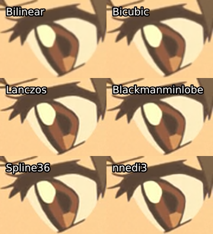
图17：放大以后的大小。来自于Commie压制的《你的名字》（Your Name (2016)），相较于源进行了裁剪，然后被放大了2倍。
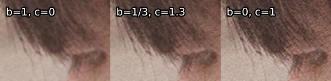
图18：不同参数的双三次(bicubic)放大比较。记住，这些只是视频的小片段，双三次放大总是会导致伪影，特别是锯齿。尖锐的双三次曲线(b=0, c=1)特别容易产生锯齿伪影。
图19：缩小并放大到原始分辨率的调整器比较。所有内容都被缩小到源分辨率的一半，然后使用nnedi3_rpow2放大回去。所有参数都保留默认值。
图20：缩小并放大到原始分辨率的调整器比较。所有内容都被缩小到源分辨率的一半，然后用相同的调整器放大回去。所有参数都保留默认值。
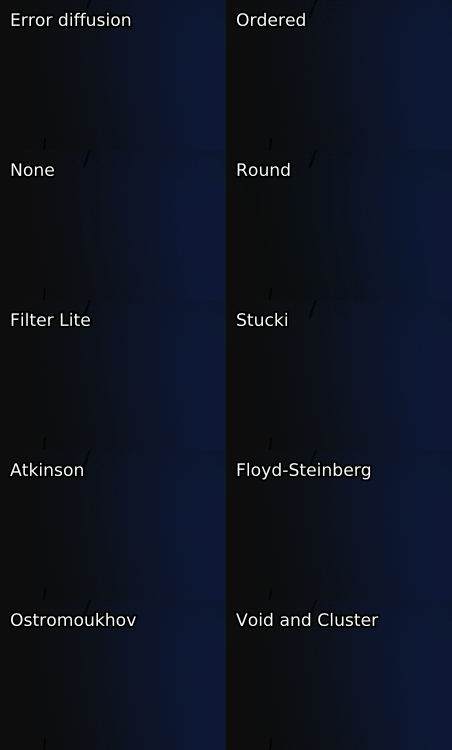
图21：抖动类型的比较。输入源为8-bit视频，向上抖动并用 f3kdb 去色带，输出为16-bit，然后抖动至8-bit。
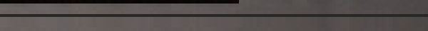
图22：一个说明为什么不适当的对角边界fx是个坏主意的例子。上面是源，下面是Geek使用边缘遮罩后的。来自Geek压制的《精灵旅社2》（Hotel Transylvania 2 (2015))。
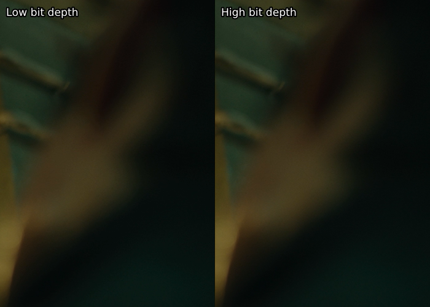
图23：在16-bit（右)和8-bit（左)分别进行伽马修复(gamma bug fix)的比较
图24：不同边缘遮罩(edgemask)的比较。从左上角到右下角：source, Prewitt, Sobel, Kirsch, TCanny，和retinex_edgemask。所有设置都保留默认值。
图25：更精确的边缘遮罩(edgemask)的比较。从左上角到右下角：source, retinex_edgemask, Kirsch, Sobel。请注意，这是在质量极差且场景灯光昏暗的源上进行对比，因此 retinex_edgemask 和 Kirsch 两种遮罩的区别比常规情况更大。
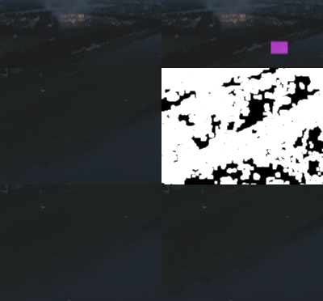
图26：去色带时使用与不使用边缘遮罩(edgemask)的比较。从左上到右下分别是：源，源中裁剪区域标记，裁剪区域，裁剪区域上的遮罩（kgf.retinex_edgemask(src).std. binated(5000).std. maximum ().std.Inflate()），无蒙版去色带（f3kdb.Deband(y=90, grainy=32,grainc=16)），和蒙版去色带。通过平滑级别，伽马值提高了50%。
图27： 一个例子说明为什么简单的亮度遮罩(luma mask)往往是不够的。取自1080p的O2STK对《了不起的狐狸爸爸 》（Fantastic Mr. Fox (2009)）进行了编码。O2STK使用了 GradFun3 和一个亮度遮罩。 标记为 Masked 的截图是 f3kdb用RGB截图的简单Sobel遮罩。
图28：来自Geek的《Hotel Transylvania 2》压制作品：另一个例子说明了为什么在没有正确屏蔽的情况下，你应该始终警惕细节是否平滑甚至遭到破坏。
虽然我们不能确定这里是否使用了遮罩，但这很可能是未使用遮罩的 f3kdb 的结果。 sunnighty似乎更常使用 GradFun3 蒙版，这在这个案例中可能有很大帮助。不知道这里发生了什么。但我猜测他们在蒙版遇到了非故意的情况从而产生了问题。
本文翻译主要基于DeepL翻译器，在此基础上大量参考typing-more/高清视频转码进阶指南.md，在此表示由衷感谢！
部分名词解释借鉴VCB-Studio、Encode Mystery，一并感谢！
对翻译错误或不足的地方欢迎指正；翻译不易，若需转载请指明出处，谢谢配合！